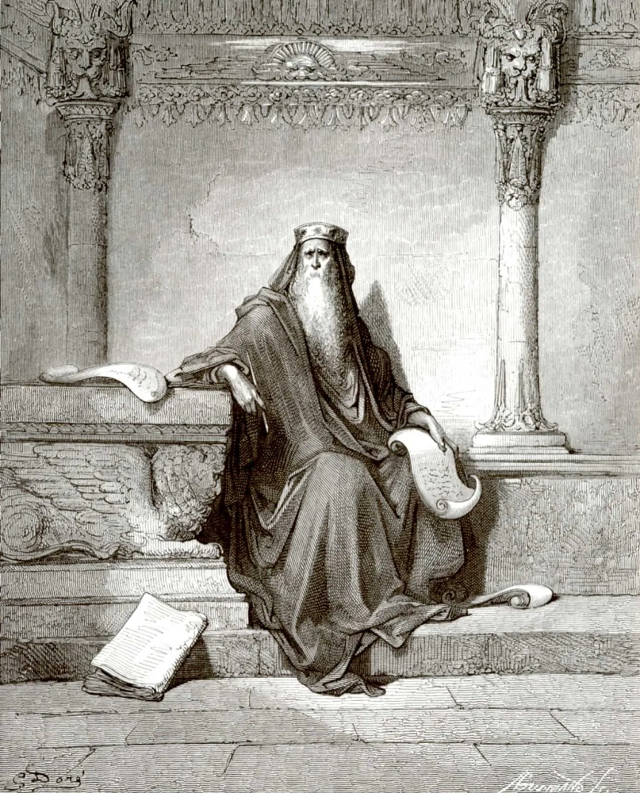
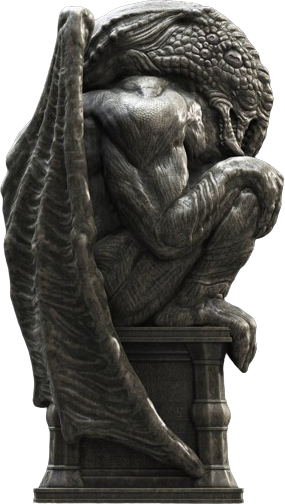
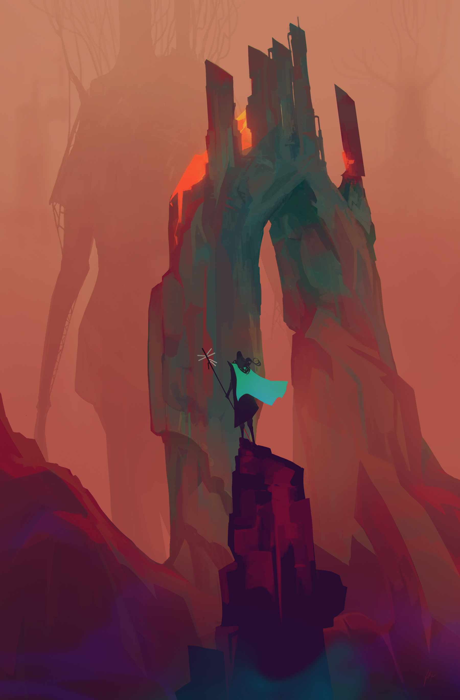
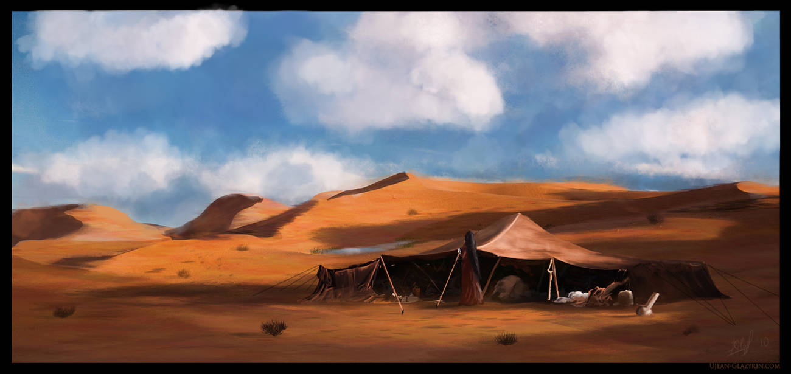

El mundo de las tenebrosas 1001 Noches
En esta sección vamos a ver de una forma muy general el mundo de las historias de horror cósmico de las 1001 Noches. Explicaremos como son las 1001 Noches escritas por el árabe loco de Abdul Alhazred y como se integran los Mitos de Cthulhu en la cosmología de todos estos cuentos populares.
¿Cómo usar este libro?
Ya que vamos a movernos entre dos mundos literarios muy diferentes, los Mitos De Cthulhu y los cuentos de las 1001 Noches, hay un sistema visual para diferenciar los diferentes contenidos.
Tenemos extractos de las 1001 Noches originales y extractos de la versión que habría escrito Abdul Alhazred que son una mezcla de las 1001 Noches con las descripciones de H. P. Lovecraft. Para agilizar las consultas, todos los lugares, los objetos y los seres de esta ambientación tienen referencias al título del cuento de las 1001 Noches y el número de noche donde se mencionan.
Aquí encontrarás extractos de los cuentos de las Mil y Una Noches originales.
Aquí encontrarás extractos de los cuentos de las Mil y Una Noches escritos de Abdul Alhazred.
Además, todos los textos que supongan reglas y sistemas de juego estarán dentro de cajas como esta.
Aquí encontrarás reglas y sistemas de juego.
El resto de elementos que se quieren destacar como reglas opcionales, semillas de aventuras y sugerencias varias vendrán con este formato.
Aquí encontrarás semillas de aventuras, recompensas de deseos y de cordura.
Los nombres de personas, objetos o lugares a veces tienen paréntesis. Dentro de los paréntesis está su referencia a los Mitos.
Por ejemplo, si vemos «Gente del mar (Profundo)» sabemos que la Gente del mar, una especie de sirenas, hace referencia a los Profundos de los Mitos de Cthulhu.

Abdul Alhazred revisando su obra a la luz del fuego
Abdul Alhazred
Abdul Alhazred nace hacia el año 700 en la ciudad yemení de Sana. Vivió durante el califato de los Omeyas y no se sabe mucho de su infancia y su juventud, excepto que se hizo poeta y tuvo algunos encontronazos con los poderes de la zona.
Es por ello que abandonó Sana y viajo por todo Oriente Próximo, Sinaí y el norte de África. Según cronistas y biógrafos, visitó las ruinas de Babilonia y las secretas catacumbas de Menfis. En estas localizaciones empezó a descubrir que el mundo no era como le habían contado y que había poderes horribles y ominosos que regían en las fronteras de nuestra realidad.
Pasó diez años en el desierto arábigo de Rub al-Jali, habitado por espectros y monstruos. En Rub al-Jali hizo dos grandes descubrimientos:
- La ciudad perdida de Aram-de-las-Columnas: donde encontró textos de una raza desaparecida anterior a la Humanidad que Alhazred denominó como los aads. Aquí sería donde abandonaría la fe musulmana y empezaría a adorar a dos entidades llamadas Cthulhu y Yog-Sothoth.
- La ciudad sin nombre: A menudo confundida con Aram-de-las-columnas, pero a diferencia de Aram, la Ciudad sin nombre es una ciudad habitada por una casi extinta de seres lagarto. Se dice que Abdul Alhazred soñó con esta ciudad la noche antes de pronunciar su inexplicable pareado: «Que no está muerto lo que puede yacer eternamente, Y con los evos extraños la muerte puede morir.»
Damasco
Tras muchas aventuras y con nuevos conocimientos, abandonó el desierto para establecerse en Damasco y escribir su obra magna Kitab Al-Azif, nombre que evoca los susurros nocturnos de los yinns, el cual fue más conocido por su traducción griega: el Necronomicón.
Pero no solo escribió el Necronomicón, se dedicó a recopilar cuentos populares, canciones y nanas, relatos e incluso sueños premonitorios y reescribirlos desde el prisma de sus nuevos conocimientos adquiridos en Aram y la Ciudad sin nombre.
Esta obra sería el germen de las versiones que conocemos de las 1001 Noches.
Las muertes de Alhazred
Según biografías oficiales, Alhazred murió de una manera misteriosa y bastante sangrienta. Cuenta el cronista de la época Ibn Khallikan que en el año 738 en Damasco a pleno día Alhazred fue atrapado por algún tipo de monstruo invisible y devorado vivo frente a numerosas personas.
Otros cronistas aseguran que sus restos pueden encontrarse en alguna de las galerías secretas de «La Ciudad sin Nombre».

Abdul Alhazred y sus visiones
Las mil y una noches de Alhazred
Durante los años que estuvo en Damasco no solo escribió el Necronomicón, sino que se dedicó recopilar e investigar cuentos e historias populares y escribir sus propias 1001 Noches, pero mostrando la cruda realidad de esas historias y como todos los agentes de los Mitos de Cthulhu eran en gran parte actores de esas historias.
Aplicó todos sus nuevos conocimientos adquiridos para estudiar todas esas historias y ver que se ocultaba detrás de ellas. De esa forma llego a varias conclusiones de carácter generales.
- Los yinns de las historias no son esos seres mágicos que contaban los cuentos tradicionales, sino especies venidas de más allá de las estrellas muchas veces antes de la aparición de los humanos. Estos yinns, que según él forman 7 tribus diferentes, son descritos en su obra con sus propias sociedades, sistemas de creencias, relaciones sociales y sus propios planes para tomar la tierra.
- Muchos de los lugares que se describen en los cuentos son edulcoraciones de lugares reales donde habitan estos «yinns».
- Lo mismo pasa con los objetos mágicos que son formas de mostrar la avanzada tecnología de estos yinns.
- Fuera de los yinns las historias populares hablan de otros seres que Alhazred trato de encajar con la nueva cosmogonía que acababa de descubrir y aceptar como su nueva fe.
Estudiosos de Alhazred consideran que estos escritos fueron una forma de su autor para mantener su cordura mediante la catarsis de la creación mediante la escritura. Es por ello que los expertos y expertas le describen (a modo de chiste) como el árabe «medio» loco y no simplemente el árabe loco.
Estos relatos fueron descubiertos por el erudito cairota Ibn Khallikan hacia el 1250 en Damasco, que se dedicó a recopilar toda la obra de Alhazred. Esta obra caería en manos de Antoine Galland que la usaría para escribir una de las primeras versiones, en este caso en francés, de las 1001 Noches.
Galland ocultó y limpió de todos sus elementos cósmicos y extradimensionales la obra de Alhazred y devolvió a las historias sus elementos originales, pero no consiguió ocultarlas del todo, quedando rastros sutiles entre sus páginas.
El mundo de las 1001 Noches de Alhazred no es el mundo de las 1001 Noches tradicional de los libros, ni el mundo de los Mitos de Cthulhu en Oriente Medio hacia el año 800. Es una mezcla bastarda que aúna ambos mundos y que espero que se quede con lo mejor y lo fusione en algo divertido que capture vuestro interés y os permita jugar muchas horas.
Los Yinns
Alhazred explica en sus 1001 Noches que existen muchas razas (él las llama tribus) y se centra en 6 tribus, especialmente, los ghūles, los janns, los al mighos, los abu-qiths, los qareens y los aads.
Estos yinns ya no son productos del dios de su antigua fe, sino que llevan en la Tierra desde miles de años provenientes de las estrellas u otras realidades que él denomina genéricamente el Gennistán. Estos genios llevan interfiriendo de muchas formas en el desarrollo de la vida en la Tierra y en la evolución de la raza humana.
Ghūles
Los ghūles son de los más comunes de los yinns de los cuentos populares y fueron los primeros que estudió Alhazred al ser muy parecidos a la nueva realidad que estaba descubriendo. Eran carroñeros y antropófagos, vivían de noche y en cementerios y eran buenos excavadores.
Los ghūles fueron la punta del iceberg de sus estudios. Al estudiarlos en los cementerios de Damasco descubrió que adoraban a divinidades parecidas a las de sus nuevas creencias. También le ayudaron a confirmar su teoría de que los yinns de los cuentos podían enmascarar a estos seres de más allá de las estrellas o de fuera de nuestra realidad.
Janns
Cultural y antropológicamente hablando, los janns son los primeros yinns, o casi mejor, los proto-yinns. Son yinns muy parecidos a los humanos con estructuras sociales complejas, familias, tribus, reinos, comercio, culturas, artes, etc. Según las historias y cuentos, crearon en el Gennistán (el mundo de los yinns) ciudades, pueblos, carreteras, etc. Son considerados los primeros seres con libre albedrío que hubo en la Tierra.
Es por todo esto que Alhazred, uso el nombre de janns para describir a los primeros seres que llegaron y dominaron la Tierra, mucho antes de que los humanos existieran. Estos seres con formas de barril de 5 caras y con pseudópodos y tentáculos por extremidades y con alas.
Sin embargo, se extinguieron mucho antes de que los hombres pisarán la Tierra y solo sabemos de ellos por los restos de su civilización que aun se conservan.
Aunque morfológicamente los humanos no tenemos nada que ver esos primeros yinns, si son muy parecidos a nosotros por su forma de pensar y vivir, por su cultura y su forma de percibir el mundo. Frente a las mentes super-avanzadas de los al mighos o la visión no-lineal del tiempo de los abu-qith, los janns podrían ser estudiados como si fueran humanos.
Alhazred estudio a los janns con mucho interés al poder extrapolar las conclusiones que saco de los janns a la raza humana. Alhazred descubrió que fueron extinguidos tanto por enemigos externos como otras tribus de yinns además de por su propia tecnología.
Estableció que lo mismo que les pasó a los janns le pasará en el futuro a los humanos, cuando alguna tribu de yinn decida extinguirnos y se aproveche de lo débiles que nos ha vuelto nuestra tecnología y la vuelva contra nosotros.
Al mighos
Los al mighos son los yinns más alejados de los humanos, no solo físicamente, sino también en la forma de pensar y de actuar. Como todos los yinns, Alhazred sitúa su origen en las estrellas, en un planeta llamado Yuggoth. Su objetivo es conquistar la Tierra, pero a pesar de su tecnología son sabios y pacientes y están esperando el momento oportuno.
Según sus estudios y sus escritos, Alhazred consideraba que los al mighos son el origen de todos los mitos de lugares malditos, desapariciones misteriosas y gentes que vuelven completamente cambiados.
Los al mighos no pueden mezclarse fácilmente con los humanos y suelen ser vistos como cheitans o demonios, es por ello que necesitan que sus minas y canteras donde extraen extraños metales estén lejos de miradas indiscretas. Tantos sus agentes humanos como ellos mismos con su avanzadísima tecnología usan todo tipo de estrategias para alejar a los intrusos o neutralizarlos mediante técnicas de control mental.
No será la primera vez que el cacique de un pueblo perdido de las montañas vende todas sus tierras por una miseria a un oscuro comprador para luego suicidarse.
Estos yinns tienen una especie de «poder de seducción» que les permite atraer a los marginados y a los débiles de mente, de forma que se convierten en sus sirvientes y en sus agentes humanos.
Estos secuaces humanos pueden comprar tierras para sus amos, expulsar a curiosos, intimidar a los investigadores, borrar pruebas, sobornar agentes de la ley y en situaciones extremas asesinar a personas peligrosas para los objetivos de los al mighos.
Abu-qiths
Estos yinns son descritos por Alhazred como seres espirituales que necesitan poseer cuerpos de seres vivos para interactuar con el mundo físico. Alhazred considera a los abu-qith como los más poderosos de todos los yinns conocidos, solo ya su magia (que no deja de ser tecnología tan avanzada que parece magia) les pone primeros en poder. Pero es además tienen control del tiempo, pudiendo moverse a través de los días, los años o los siglos atrás y adelante y anclándose a una época poseyendo un cuerpo de un ser vivo.
Si de otros yinns consideró que eran de fuera de la Tierra, con los abu-qith llego a la acertada conclusión de que eran de fuera del tiempo.
Al tener una visión no lineal del tiempo, su forma de pensar, sus objetivos y sus metas e incluso su ética y moral escapa de la comprensión humana. Aun así, parece que no suelen ser peligrosos para nosotros procurando no dañarnos.
Según sus estudios del folclore local, estos abu-qith se escondían en los relatos y cuentos en los personajes poderosos, sabios y un poco excéntricos que entrenan a héroes y heroínas.
Nos referimos a personajes como Abd Al-Samad de la «Historia de Juder el pescador o el saco encantado», un poderoso mago perteneciente a una familia de poderosos magos, un tanto alocado y que no busca dinero o poder, sino más conocimientos.
Estos personajes que tienen sus correspondientes versiones occidentales en personajes como Merlín (que curiosamente se movía al revés en el tiempo) esconden detrás a abu-qith que han tomado posesión de humanos y que por alguna razón que solo su percepción única del tiempo.
Warams
El estudio de los abu-qith llevo a Alhazred a conocer a sus mayores enemigos y a continuar sus investigaciones con esta tribu casi extinta de yinns, los warams, que junto a los qareens, quizás sean los yinns más alejados de los humanos.
Tradicionalmente, los yinns siempre han tenido un elemento relacionado (aire, agua, etc.), no es definitorio de cada yinn, pero si explica muchas cosas de su forma de ser y pensar.
Así pues, según las leyendas, los efrits son fuego, los mareds agua, los khotrobs la tierra, etc. Los Warams están detrás de las historias de yinns de aire y viento al ser parte viento y tener cierto control de este elemento.
Según le fue rebelado a Alhazred, llegaron a la Tierra de las profundidades del espacio y dominaron la superficie de la Tierra durante milenios antes de la aparición de los humanos. Crearon fabulosas ciudades de basalto, pero tuvieron que abandonarlas cuando casi fueron aniquilados por los abu-qith y refugiarse bajo tierra para resurgir milenios más tarde y extinguir en venganza a los abu-qith. Es por esto que los abu-qith y los warams son enemigos ancestrales, aunque muchas no sepan bien por qué se pelean.
Con los siglos fueron decayendo hasta casi extinguirse. Los pocos que han sobrevivido viven ahora escondidos en cavernas y templos ruinosos, a veces adorados como dioses por tribus paganas. También se sabe warams que se mueven por todo el desierto como eternas y poderosas de arena.
Estos yinns con forma de pólipos y hechos en parte de aire se cree que son inteligentes, pero su forma de pensar es tan extraña que muchas de las decisiones que toman parecen no tener sentido.
No solo su forma de pensar es totalmente alienígena, también su forma de percibirlo. Perciben el mundo de otras formas desconocidas, de forma que puede «ver» a través de las paredes o moverse sin problemas en plena oscuridad.
Qareens
Alhazred, como otros tantos estudiosos, consideraba que los cuentos de dragones y lagartos terribles que se contaban en Oriente próximo, pero sobre todo os que tanto les gustaba narrar a los francos (europeos en general), chinos e hindúes. Eran un reflejo de los yinns denominados qareens.
Pero para Alhazred los qareens no eran simples yinns contra los que los jinetes francos peleaban, eran unos seres tan complejos que su forma de pensar no era comprensible para los humanos y no tenían sentimientos. Estableció que esa forma de pensar tan alien era representada en las historias con dragones tremendamente inteligentes, increíblemente malvados y sin ningún tipo de escrúpulo.
Pero Alhazred, fue más allá, estableciendo que los qareen eran mucho más que grandes monstruos reptilianos. Esta forma física no mostraba realmente su naturaleza, solo era una forma de poder interactuar con el mundo material. En su forma natural eran unos seres espirituales cuya energía podía trastocar las mentes de los humanos cercanos y hacerles cometer terribles actos.
Los qareens de las leyendas populares son seres espirituales que acompañan a los humanos y que les inducen a hacer actos malvados y suicidas. De hecho, se agarran con sus piernas a tu cuello para poder susurrarte maldades al oído. Es por ello que Alhazred nombro a estos yinns con su nombre popular, por su forma espiritual y su capacidad de poseerte y hacerte ejecutar acciones profanas e impuras.
Aads
Poco se sabe de esta tribu de yinns a la que Alhazred atribuye la creación de Aram-de-las-columnas y el descubrimiento del azufre rojo, el más poderoso de los agentes alquímicos.
Cuando la ciudad de Aram-de-las-columnas fue tragada por la Tierra como castigo divino por la soberbia de los Aads, su rey Scheddad ben-Aad se llevó a los supervivientes fuera de nuestro mundo y dejo un fabuloso tesoro.
Según pudo descubrir Alhazred el tiempo que en Aram-de-las-Columnas, los Aads eran yinns de gran poder mágico. Como otros yinns eran de fuera de nuestro mundo (puede que de Yaddith, un planeta cerca de Deneb, la estrella más brillante de la constelación del cisne).
Construyeron la fabulosa ciudad de Aram-de-las-Columnas gracias a uno de sus grandes descubrimientos, el agente alquímico conocido como azufre rojo. Con él podían crea oro a partir de plomo y hierro y piedras preciosas con cantos rodados.
Los yinns y sus posesiones
Y para realizar este proyecto, voy a ir a buen paso, lo más de prisa que pueda, al palacio del sultán, en la India, y entraré en el cuerpo de la joven princesa y tomaré posesión de su espíritu momentáneamente. Y de tal suerte, convertida en posesa, parecerá loca a cuantos la rodean, y su padre, el sultán, procurará que la curen los médicos más hábiles de la India. Pero ninguno podrá adivinar la verdadera causa del mal, que será mi presencia en el cuerpo de la joven; y todos los cuidados que con ella tengan fracasarán bajo mi aliento y por mi voluntad. Y entonces te presentarás tú, y serás quien cure a la princesa.
¡Y voy a indicarte los medios para ello!" Y tras de hablar así, el genni se sacó del pecho algunas hojas de un árbol desconocido, las cuales me entregó, añadiendo: "Una vez que se te haya introducido a presencia de la princesa enferma, la examinarás como si ignorases completamente su mal, tomarás actitudes cabizbajas y pensativas para imponer con ellas a tu alrededor, y acabarás por coger una de estas hojas que empaparás en agua y con la cual frotarás el rostro de la joven. Y al punto me veré forzado a salir de su cuerpo, y en aquella hora y en aquel instante recobrará ella la razón y tornará a su estado prístino.
Referencia: Historia del jinete detrás del cual tocaban salto indios y chinos (n. 867)
Un aspecto muy importante de los yinns, que Alhazred debió sufrir en sus carnes, son su capacidad de poseer a las personas. Hablamos tanto de poseer los cuerpos directamente como de controlar sus mentes para que obedezcan sus órdenes.
En bastantes partes de sus 1001 Noches muestra posesiones y según sus biógrafos, parte de su transformación en adorador de los primigenios se debió a la influencia de diferentes posesiones.
Dentro de los Yinns de los que nos habla Alhazred en sus 1001 Noches, hay dos tribus con capacidad de poseer a seres humanos, los abu-qith y los qareens. También habla en sus cuentos de otras criaturas que no considera yinns con capacidad de poseer humanos como los falaks menores.
Hay que hacer hincapié, que si bien no son posesiones como tal, los al mighos y las gentes del mar tienen cierta capacidad de seducir y atraer a personas débiles de mente y marginadas, convirtiéndolas en aliadas. No son posesiones reales, pero pueden fácilmente fanatizarlos para que atraigan a otros como ellos o incluso se dejen la vida en su defensa.
Los abu-qith y sus posesiones a través de los tiempos
Los abu-qith, como ya hemos dicho, son yinns espirituales que pueden poseer los cuerpos de todo tipo de criaturas. La posesión es algo innato a su naturaleza y lo han perfeccionado tanto que incluso pueden poseer a través del tiempo, de forma que puede tomar el cuerpo de personas de los tiempos del Gran Soleimán y conocerle en persona. Las esencias de los poseídos son trasladados al cuerpo actual abu-qith y es tratado con amabilidad allí donde viva.
Como no tienen un carácter maligno, y, por tanto, no son considerados cheitans, tratan de interferir lo mínimo en sus víctimas, de forma que no alteran las vidas de sus poseídos durante el tiempo de posesión y le borran la memoria antes de abandonar el cuerpo poseído y devolvérselo a su legítimo dueño.

Los qareens y su aura depresiva
Los qareens de normal no pueden poseer directamente a un humano, pero pueden corromper su alma, de forma que pueden inducirlos a actos ominosos como el asesinato o el suicidio. Lo que pierden en control lo ganan en cantidad pudiendo inducir a la depresión y la maldad a miles personas con su sola presencia. Su aura espiritual es tan poderosa que incluso años después de abandonar las cuevas subterráneas que suelen habitar estos lugares suelen afectar a sus visitantes.
En mentes extremadamente débiles o rotas pueden llegar a conseguir un control total, de forma que obedezcan ciegamente sus órdenes. El control que ejerce sobre estas víctimas es tan poderoso que nadie más puede influir en ellos. Además, solo les importa cumplir las órdenes dadas que nada puede inmiscuirse, ni el hambre o la sed les importará, aunque sí hará estragos en su cuerpo.
El país de Gennistán
Según las creencias populares y la teología islámica, los yinns viven a caballo entre nuestra realidad y una especie de mundo espiritual como puede ser el cielo o el infierno llamado en Gennistán o país de los yinns.
Alhazred interpretó el Gennistán de otra manera muy distinta. Para él, el Gennistán no era una dimensión espiritual, sino que serían las estrellas, el espacio exterior.
Mediante sus estudios y sus visiones elaboró la teoría de que los yinns venía de los cielos y que la mayoría de seres extraños también venían del espacio exterior o incluso de realidades diferentes a las nuestras.
Sus ideas, aunque extrañas en su época, son totalmente correctas y seguramente muy influenciada por a astronomía/astrología tan popular en su época.
De hecho, hemos de considerar que Alhazred no era musulmán, adoraba a unos dioses cósmicos llamados Yog-Sothoth y Cthulhu. Según sus creencias, Yog-Sothoth estaba atrapado fuera de nuestra realidad y Cthulhu había llegado a la Tierra de las distantes estrellas.
Forma de actuar
Como ya hemos visto, las motivaciones de los distintos yinns son muy diferentes, con lo que sus formas de actuar respecto de los humanos son muy diferentes.
Tenemos, pues, dos opciones, los que son neutrales con los humanos y los que buscan esclavizar o erradicar a la raza humana, que la tradición los llama cheitans o diablos.
Los yinns tienen libre albedrío, por lo que pueden ser buenos o malos y ser o no ser creyentes. Es por ello que la tradición distingue entre yinns y cheitans (o shaitans).
Los cheitans son lo que en la tradición judeocristiana llamaríamos demonios. Son yinns que no profesan la fe musulmana y, por tanto, se les considera malvados, siendo el más poderoso de ellos Iblis que sería versión islámica de Satanás.
Para Alhazred no existe esa diferenciación entre buenos y malos, ya que no los considera parte de nuestro mundo y, por lo tanto, quedan fuera de las leyes divinas y humanas que rigen el mundo de los hombres.
Relaciones sociales y relaciones con los humanos
Cada tribu de yinns tiene su propia estructura social. Estas pueden ser más cerradas o más abiertas. Por ejemplo, los al mighos tienen un estricto sistema de castas donde el libre albedrío es casi inexistente. Por otro lado, los abu-qith y los janns que tienen una sociedad más abierta y libre, donde cada ente puede hacer lo que quiera, cuando quiera, siempre que sus actos no entren en conflicto con otros entes de su sociedad.
Normalmente, no se ha tratado las relaciones sociales, familiares y sentimentales de los seres de los Mitos, pero puedes tener su importancia. Mientras que los al mighos no tienen lazos sentimentales, los janns y los abu-qith son más complejos.
Un jann despertado después de miles de años, puede que esté asustado y trate de defenderse o que se desespere cuando vea que es el último de su tribu.
Un abu-qith puede que trabe amistad con humanos, incluso se interese por su cultura y aprenda a disfrutarla mientras posee a un humano, quizás busque pareja y tenga amigos, tenga un jefe y disfrute de la maternidad/paternidad.
Lo mismo que tienen relaciones positivas, pueden ser negativas. Los supervivientes de una tribu/colmena de al mighos pueden jurar vengarse del que los destruyo o un jann despertado decida destruir a aquellos que exterminaron a su tribu hace milenios.
Recordemos que los qareens no piensan como nosotros y tienen una mentalidad malvada, altamente vengativa y maligna.
Relaciones sexuales
y me dijo: “¿No reconoces a tu esposa? Te he salvado de la muerte con ayuda del Altísimo. Porque has de saber que soy una efrita. Y desde el instante en que te vi, te amó mi corazón, simplemente porque Alah lo ha querido, y yo soy una creyente en Alah y en su Profeta, al cual Alah bendiga y preserve.
Cuando yo me he acercado a ti en la pobre condición en que me hallaba, tú te aviniste de todos modos a casarte conmigo. Y yo, en justa gratitud, he impedido que perezcas ahogado. En cuanto a tus hermanos, siento el mayor furor contra ellos y es preciso que los mate”.
Referencia: Cuento del segundo jeque (n. 2)

Los yinns, dentro de su libre albedrío, pueden tener las relaciones sexo-afectivos que quieran con quien quieran. También pueden definirse o no en el género que quieran en el caso de tener el concepto de género.
Algunos de los yinns tienen capacidad de transformarse en entes con apariencia humana o poseer cuerpos humanos. Así pues, pueden tener relaciones sexo-afectivas de cualquier tipo con humanos.
De hecho, son famosos los tratados de juristas medievales estableciendo leyes que rigieran, las bodas, las separaciones y divorcios o las herencias en las que estaban involucrados los yinns.
El gran Rey Soleimán
El gran Rey Soleimán, más conocido como el sabio rey Salomón, es una figura mítica dentro de los cuentos de las 1001 Noches.
Las grandes hazañas de la antigüedad siempre son fruto del rey Soleimán desde vencer a ejércitos de yinns a realizar grandes prodigios mágicos.
Hay, además, toda una serie de objetos de gran poder que se le atribuyen como creador, desde su mítico tesoro más allá de los siete mares a alfombras voladoras o amuletos para vivir bajo el agua.
Alhazred elaboró varias teorías que podrían explicar todas las historias que tratan sobre este personaje histórico.
Podría ser un avatar de un dios arquetípico como Nodens que existía para tener controlados a los primigenios y sus adoradores, tanto humanos como yinns.
Otra opción que estudio el árabe medio loco fue que Soleimán fuera un gran mago Aad, los creadores de Aram-de-las-Columnas, o más conocidos como yaddithianos.

Los yaddithianos/aads es una raza casi extinta de magos/científicos muy poderosos cuyo mundo/dimensión fue devorado por los falaks (dholes).
La última teoría y quizás más loca que planteo Alhazred fue que Soleimán fuera un avatar de Nyarlathotep. Lo normal es que ese avatar como otros tantos fuera un ser malvado dedicado a causar miedo, locura y sufrimiento a los mortales.
Pero esta teoría estipula que en el avatar residía una minúscula porción de Nyarlathotep, una porción compuesta por su amor por la humanidad. Una porción de un ser omnipotente podría explicar las prodigiosas hazañas del sabio rey Soleimán, tan extrañas a veces.
Para entender más claramente este personaje podemos compararlo con el rey Arturo y su mítico Camelot. Estaríamos hablando de alguien mítico que representa grandes ideales y que es un elegido por el Destino para cuando grandes hazañas y que volverá cuando se ke necesite.
Hazañas del rey Soleimán
Veamos algunas de sus hazañas narradas en las 1001 noches.
- Venció a un ejército de 10.000 yinns con su ejército de hombres, animales y aves. A muchos de ellos los encerró en vasos de cobre sellados con su símbolo.
- Venció en singular combate a la Bestia Negra (un terrible avatar de Nyarlathotep) y la encerró en una botella y la lanzo al mar.
- Se dice que su alfanje, el Escorpión de Soleimán, podía partir una montaña como si fuera de jabón.
- Era servido por los yinns, los cuales no osaban a rebelarse a sus órdenes. De hecho, creó varias joyas que tenían vinculados a poderosos caudillos yinn.
- Hay historias que aseguran que estaba en dos sitios a la vez haciendo importantes prodigios. Quizás podía estar en dos sitios a la vez o quizás podía moverse muy rápidamente con objetos como alfombras voladoras.
- Una de sus hazañas más poderosas es crear el sello de Soleimán (Símbolo arcano) que te permite protegerte del poder de los yinns y otros seres malvados o que sirve para encerrar a cheitans y desterrarlos de esta realidad.
Los primigenios y los dioses exteriores
Dentro de las tradiciones de Oriente Medio podemos encontrar bastantes seres que se ajustan con las criaturas y los monstruos de las historias de Lovecraft. Pudiendo relacionar al gran ser acuático que sostiene el mundo llamado Bahamūt con el gran y poderoso Cthulhu o a los genios de la lámpara con avatares de Nyarlathotep, preferimos mostrar otros seres y dioses de los Mitos menos conocidos como Nardún (más conocido como Cthugha) o Suc’Naath, pero igual de interesantes.
Baba Daryä y Bu Diryan (Dagón, Hydra)
Baba Daryä significa «padre del mar» en persa y eso denota el origen de esta leyenda. Esta criatura es un demonio o yinn cuyas historias de horror son muy populares entre las comunidades que viven junto al mar. Nadie conoce sus verdaderos rasgos faciales porque nunca es visible y siempre aparece en la más absoluta oscuridad.
Sin embargo, es descrito como una persona del mar increíblemente alto, grande y fuerte. Sus víctimas más habituales son los buceadores de perlas, los pescadores y la gente de mar. Su historia mantiene alerta a los marineros, especialmente a los aprendices, y evita que los niños se acerquen solos al mar.
Bu Diryan es un ser acuático espeluznantemente feo y gigante que controla el agua y los mundos submarinos. Esta criatura tiene grandes cadenas que se envuelven alrededor de su cuello y sus pies.
Se cuenta que estas cadenas son usadas para envolver a las personas que atrapa. El tintineo que provocan mientras camina por la playa y la costa es escuchado por la gente, provocando espanto.
Alhazred los describe en sus cuentos como gentes del mar de gran tamaño, muchos más poderosos que sus congéneres. Estima que tienen miles de años de antigüedad y con casi inmortales.
Tantos años de vida les han hecho muy poderosos, pero también han afectado a su mente y los han convertido en peligrosos seres.
Baba Daryä y Bu Diryan son adorados por la gente del mar y realizan todo tipo de sacrificios en su nombre. En general, son temidos por los marineros y la gente de comunidades costeras, sin embargo, algunas de estas comunidades han sido corrompidas por las gentes del mar y han caído en su influjo y se dedican a adorarlos.
El proceso de corrupción de muchas de poblaciones costeras son muy parecidas. Suelen seducir a las comunidades costeras favoreciendo su pesca. Hacen que sean prósperas y estas comunidades empiezan a ver a las gentes del mar con buenos ojos, no solo como monstruos marinos, sino como fuentes de riqueza.
Empiezan entonces a hibridarse con las mujeres de dichas comunidades, prometiendo que sus descendientes serán poderosos e inmortales y que podrán combatir a los poblados vecinos que envidian su prosperidad.
Finalmente, con el paso del tiempo, acaban convirtiendo a toda la comunidad en híbridos que poco a poco deja de relacionarse con el mundo exterior.
En este punto introducen sus creencias y sus cultos y estos pueblos costeros empiezan a servir a las deidades a las que sirven las gentes del mar, como Baba Daryä y Bu Diryan o el ser que llamamos Bahamūt y las gentes del mar llaman Cthulhu.
’Umr-At-Tawil (Avatar de Yog-Sothoth)
’Umr-At-Tawil (en árabe عمر الطويل, El de la vida prolongada) es un avatar de Yog-Sothoth que custodia la Última Puerta, tras la cual, está la Estancia de Yog-Sothoth donde reside esta deidad exterior.
’Umr At-Tawil se manifiesta como un humanoide alto y delgado, cubierto por un velo que oculta su rostro. Se dice que su rostro es tan horrible que su sola visión provoca la pérdida de la poca cordura que te quede.
Es considerado relativamente benévolo, ya que no es abiertamente hostil al ser humano. Si se consigue llegar hasta él, puede dejarte pasar a la Estancia de Yog-Sothoth o concederte algún deseo, pero también puede quitarse el velo y volverte loco al instante.
El culto del cuarenta no adora a este avatar de la deidad exterior Yog-Sothoth, si no, más bien, buscan la manera de llegar ante él para poder abrir la Última Puerta y dejar que Yog-Sothoth entre en nuestro mundo, desencadenando un cataclismo que limpie la Tierra de humanos y permita que los demás primigenios conquisten nuestro mundo.
Astarte (Shub-Niggurath)
¡Iah! ¡Iah! ¡Astarte! Gran Madre de los mil y un retoños, ¡Yo te invoco! ¡Contesta la llamada de tu siervo que conoce las palabras de poder! Yo te digo: ¡Levántate de tu sueño y acude con un millar más uno! Hago los signos y las libaciones, pronuncio las palabras que abren la puerta. Te digo: ¡Acude! Golpeo la aldaba. ¡Ahora! ¡Anda por la Tierra una vez más!
Esta deidad mesopotámica de la fertilidad es la máscara que usa la pervertida divinidad primigenia de la fertilidad denominada por Alhazred como Shub-Niggurath. Se la representaba como una mujer embarazada de múltiples retoños, de forma que está inflada y deformada.
Sus sirvientes directos son sus vástagos, que aparecen en su representación al ser invocada su madre si está no puede aparecerse.
Esta divinidad exterior es adorada por La progenie de la Luna Creciente, un culto de adeptos sirvientes de los al mighos.
Nardún (Cthugha)

Nardún es un primigenio relacionado con el elemento fuego. Normalmente, se presenta como una gran bola de fuego consciente, pero puede cambiar de forma a su antojo, ya que es solamente una masa de radiación y calor dotada de consciencia.
Nardún desprende calor en estado puro y es capaz de provocar desertización y matar humanos por falta deshidratación con su sola presencia. La única función de esta entidad es reducirlo todo a cenizas, propósito para el que se sirve de sus súbditos, los fuegos de la Yahannam.
Sus adoradores suelen tener tendencias pirómanas y casi todos sus rituales se basan en prácticas relacionadas con fuego, desde fuegos ceremoniales y a caminar sobre las brasas a producirse quemaduras o quemar vivos a animales o personas.
Nardún es adorado por los seguidores del Fuego y la Luz, que son una pervertida escisión del zoroastrismo. El zoroastrismo tiene el fuego como un elemento divino y purificador, pero la secta del Fuego y de la Luz lo convirtió en un elemento destructor. Nardún quiere consumir el mundo y sus seguidores solo desean cumplir sus deseos.
Se sabe de ciertos elementos que podrían contener parte de su esencia y podrían usarse para traerlo a nuestro mundo, como la Esfera Celeste de Al-Schamardal o las Flores de Oro.
Suc’Naath
Suc’Naath es uno de los dioses malditos y descerebrado que bailan desenfrenadamente al son de flautas y tambores para su señor Azathoth. Tiene forma de huracán con trazas color violeta y dorado.
Entre sus remolinos de viento se forman rostros agonizando y emite constantemente chasquidos y chirridos terriblemente desagradables.
Su esencia está fragmentada en tres partes, una en un cometa llamado Aiin, otra en algún tipo de estatua ubicada en la antigua Babilonia, y la última ha sido transmitida genéticamente durante eones a través de razas pre-humanas y humanas, principalmente en las tierras regadas por el Tigris y el Eufrates, lo que conocemos como Mesopotamia. Si alguna vez se combinan estas tres partes, Suc’Naath se liberará de su maldición.
Se dice que los portadores de sus poderes pueden realizar grandes prodigios mágicos y/o están locos.
Es servido por un pequeño culto conocido como la Mano Dorada de Suc’Naath, que reúne a intelectuales trastornados, poderosos taumaturgos perturbados y asesinos entrenados. Su misión es adorar y liberar a Suc’Naath de la maldición que le tiene atado a su señor Azathoth. A cambio recibirán de su dios grandes poderes y la vida eterna.
Bahamūt (Cthulhu)
"¡Ahora, oh Belukia! para que sea perfecta tu instrucción a tu regreso entre los hijos de los hombres, has de saber que a la tierra que habitamos la están refrescando siempre las nieves del monte Cáucaso, que la rodea cual un cinturón. De no ser así, no podría habitarse nuestra tierra por causa del fuego subterráneo.
También está la tal constituida por siete pisos que gravitan sobre los hombros de un genni dotado de una fuerza maravillosa. Este genni está de pie encima de una roca que descansa a lomos de un toro; al toro lo sostiene un inmenso monstruo acuático llamado Bahamūt que flota en la superficie del Mar de la Eternidad sumido en un profundo sueño.
Referencia: Historia de Belukia (n. 362)
Bahamūt es un ser mitológico de inmenso poder y de tamaño gargantuesco, que según diferentes versiones tiene forma de pez, de ballena, de hipopótamo o incluso las más locas y desquiciadas como la Alhazred que lo describe como un humanoide con cabeza de pulpo y alas membranosas y al que denomina Cthulhu.
Bahamūt flota inconsciente sobre el mar de la Eternidad y sobre él reposa todo nuestro mundo. Si algún día despierta, el mundo será destruido. Según Alhazred, esta creencia es una exageración para demostrar su inmenso poder. Como adorador de Bahamūt, Alhazred tiene hojas y hojas hablando él.
Según estos escritos, Bahamūt llego a nuestro mundo de las estrellas y alguna extraña maldición hizo que lleve eones dormido en una ciudad sumergida llama R’lyeh con todos sus congéneres, versiones menos poderosas llamadas Semillas.
R’lyeh, como parte de la maldición, se hundió en el mar y ascenderá de los abismos oceánicos cuando las estrellas se alineen adecuadamente y el gran Bahamūt despierte de su sueño.
Es adorado por varias sectas por todo oriente próximo y es la deidad principal de las gentes del mar. Todos estos grupos trabajan para despertarlo de su profundo sueño.
El sueño de Bahamūt
La mente durmiente de Bahamūt es tan poderosa que puede afectar al mundo de los sueños y es por ello que se cree que ha creado una versión de R’lyeh en la Tierra de los Sueños conocida como la Ciudad de Bronce. La Ciudad de Bronce es una versión de R’lyeh adaptada a los sueños de los humanos (la especie dominante en este momento en la tierra), pero igual de maldita, donde todos sus habitantes están en una mezcla de sueño eterno y éxtasis temporal.
La princesa Tadnaar, dormida sobre un diván en el palacio más grande de la ciudad y vigilada por dos portaalfanjes, es una representación onírica del propio Bahamūt. Si alguien consigue despertarla, el gran Bahamūt podría subir niveles en su profundo sueño y estar más cerca de despertar. Además, podría afectar al mundo real y no solo las tierras oníricas.

Para evitar esto, tanto en el mundo de la vigilia como en el mundo de los sueños hay una organización llamada e Gremio de Bronce que vigila y sabotea todo intento de descubrir la ciudad y despertar a la princesa. Toda esta trama se desarrolla en la aventura Más allá de la Ciudad de Bronce: Historia de la segunda expedición a la Ciudad de Bronce.
Cultos y sectas de adoradores
Las arenas de todo Oriente Medio y el Magreb están llenas de sectas de adoradores de dioses de los Mitos. Veamos en profundidad algunos de los cultos más importantes e interesantes, cuáles son sus creencias, cómo se organizan, qué buscan y cuáles son sus rituales más significativos.
Secta del cuarenta
cuarenta colores, diferentes las telas … cuarenta cubas de grandes dimensiones y otras cuarenta de dimensiones más pequeñas … una bandeja con cuarenta pasteles … cuarenta días, transcurridos entre fiestas y regocijos … permaneció allí cuarenta días y cuarenta noches … permaneció allí cuarenta días y cuarenta noches … cuarenta gruesas piedras preciosas … y así hasta más de 250 referencias en las 1001 Noches.
El 40 es un número de suma importancia en las creencias de muchos los pueblos que habitan todo Oriente Medio. Pero para esta secta apocalíptica el 40 hace referencia a los 40 días que Noé paso en su arca. El objetivo de este degenerado culto es crear un gran cataclismo, como un diluvio, que limpie la Tierra para su amo y señor Yog-Sothoth en su forma de ’Umr-At-Tawil y que este pueda traer de vuelta al resto de primigenios.
Cada célula de esta organización está formada por 40 personas, con un único jefe que dirige todas las actividades del grupo. Las decisiones importantes del grupo se votan democráticamente. El líder solo es una forma de que alguien tome decisiones rápidas para los temas del día a día.
Cuando una célula es descubierta o destruida o incluso sus proyectos apocalípticos acaban mortalmente, los supervivientes se separan a la espera de una señal de ’Umr-At-Tawil. El que recibe la señal puede crear una nueva célula.
Personas destacadas que forman parte del culto
Como secta es muy poco personalista. Cada célula es semi-autónoma y puede tener su jefe, elegido entre todas las personas de la célula, pero la secta como tal no tiene un líder que la dirija con mano de hierro. Los líderes de las diferentes células se comunican entre ellos y están organizados para llevar a cabo sus planes de destrucción mundial.
Lo curioso de las células es que cada una es muy diferente de las otras, una puede ser ricos comerciantes, otra de criminales y otra de gente del mar. Normalmente cada culto tiene un público objetivo de donde saca militantes, pero esta secta literalmente tiene sectarios de cualquier extracto y condición social. Podemos considerar que los 40 ladrones de Alí Babá eran una célula de la secta que se dedica a robar para sustentar las actividades de otras células.
Lugares de culto y refugios

Cada célula de la secta tiene su guarida secreta, que pueden ir desde algún tipo de almacén medio abandonado hasta alcázares abandonados en las montañas o antiguas ruinas babilónicas.
- Cerca de Bagdad, la secta tiene un antiguo alcázar abandonado en la cima de una montaña. Están estudiando tecnología perdida y rescatada del fondo del mar. Parte de la célula vive en el alcázar y otra en Bagdad, consiguiendo dinero, material y provisiones para la gente del alcázar.
- Otra célula se ha asentado en Petra. Están explorando sus cientos y cientos de pasadizos en busca de algún conocimiento prohibido u objeto mágico que les ayude en sus apocalípticos objetivos. Petra no es muy frecuentada, pero la célula está haciendo correr rumores de maldiciones y monstruos para que nadie se acerque. De todas formas no tienen problemas el sacar la jaiba y cortar los gaznates de los intrusos.
Rituales
La secta del 40 es una secta muy pragmática y no son de perder tiempo en rituales y ceremonias. La mayoría del tiempo trabajan en sus planes apocalípticos con mucha dedicación. Solo algo rompe la rutina laboral, la comunión con ’Umr-At-Tawil. En este rito es celebrado cuando en una votación de la célula sale un resultado de 20/20. Este resultado considera que la decisión debe hacerla ’Umr-At-Tawil y por eso se le invoca.
Cada grupo de votantes se coloca en un lado de la estancia y empiezan a hacer los rezos y las zalemas invocatorias. El grupo que tiene razón recibe la visión del avatar de Yog-Sothoth y pierde la cordura ante su presencia. Gritan, chillan, gimen e incluso pierden la razón. Cuando todo vuelve a la normalidad se hace lo que había votado el grupo tocado por ’Umr-At-Tawil.
Situación actual
Una célula de los 40 encontró un antiguo asentamiento acuático de los janns en el Golfo Pérsico. Han ido sacando todo tipo de artilugios del fondo marino y los han ido repartiendo entre otras células para ver que pueden hacer con estos ingenios. Muchos están destrozados por el agua y el tiempo, pero algunos parece que pudieran funcionar y esos grupos empiezan a tener éxitos en sus proyectos.

La Mano Dorada de Suc’Naath
… y tras alabar el innombrable nombre de su dios, Suc’Naath, pero solo nuestro Creador es más grande, empezaron a bailar girando como hacen los mevlevíes durante sus danzas. Pero de entre sus ropajes, sus giros y sus contorsiones empezaron a formarse figuras extrañas y sombras deformes que fueron tomando cada vez una forma más clara para mí, hasta poder ver la cara de mi jeiquesa Mariam llena de dolor y terror. Y sin previo aviso, uno a uno, los danzantes fue cayendo dejando grabado en mi alma la cara abotargada de la luz de mis mañanas y mis ocasos.
La Mano Dorada de Suc’Naath reúne a intelectuales trastornados, poderosos taumaturgos perturbados y asesinos fanáticos bien entrenados. Su misión es adorar y liberar a Suc’Naath de la maldición que le tiene atado a su señor Azathoth. A cambio recibirán de su dios grandes poderosos y la vida eterna.
La secta es pequeña, pero muy poderosa, sus agentes mágicos tiene grandes poderes, sus artistas tienen mucha fama y dinero y sus asesinos son mortales. Cada miembro del culto, tras una concienzuda selección y con el beneplácito de la suma sacerdotisa Ziba, puede elegir un discípulo al que enseña todos sus secretos y todo el credo de la secta.
Los y las artistas suelen escoger a la gente más fanática de su arte. Si manejan las energías de la magia, buscan a las personas que portan la esencia de Suc’Naath, ya que su magia es poderosa y son proclives a la locura y el caos. Por último, los asesinos y asesinas de la secta suelen buscar pillastres que viven en la calle sin familia a los que infundir sus macabras creencias.
Personas destacadas que forman parte del culto
La Mano Dorada de Suc’Naath es un culto muy pequeño, pero muy poderoso, solo los mejores entran en ella y después de haber demostrado con creces su fidelidad y fanatismo hacia la Mano Dorada y a Suc’Naath.
- Ziba, poderosa maga y suma sacerdotisa de la Mano Dorada de Suc’Naath. Como única portadora de la esencia de Suc’Naath es la más adecuada para liderar el culto. Además, esa esencia hace que sus poderes mágicos sean muy superiores a otros magos de la secta.
- Alura, amazona, guardaespaldas de Ziba y asesina principal de la Mano Dorada de Suc’Naath. Es la mano ejecutora de Ziba, fanática de la Mano Dorada y adicta a Ziba.
Lugares de culto y refugios
Actualmente, no tiene ningún lugar de culto fijo. Toda la secta está muy activa desde que se predijo la llegada del cometa Aiin y no tienen tiempo para rituales. Todos andan buscado la estatua que guarda la tercera parte de la esencia Suc’Naath. Antes de estos hechos tampoco eran de mucha ceremonia y rito, quedaban en khans perdidos en la nada para hacer sus extraños ritos de baile lejos de miradas indiscretas.
Tampoco han tenido nunca la necesidad de tener refugios, ya que gran parte de sus cultistas eran ricos y poderosos, con grandes mansiones donde hacer sus reuniones y con dinero suficiente para callar bocas indiscretas.
Rituales
Siguiendo el destino de su amo y compartiendo su maldición, el principal ritual de la secta es bailar frenéticamente al sol de flautas, como Suc’Naath alrededor de Azathoth. Bailan hasta la extenuación y caen inconscientes al suelo. Los danzantes puede tener una catarsis y Suc’Naath puede entregarles una visión de su futuro o de su pasado.
Fuera de los bailes que les ponen en comunión con su dios, son más de reuniones donde compartir secretos mágicos, hablar del arte profano que tanto les gusta y comentar sus trucos de asesino.
Los adeptos y adeptas se suelen marcar el cuerpo con escarificaciones en forma de un triángulo invertido, simulando el cono que genera el huracán y que representa a Suc’Naath.
Situación actual
Actualmente, la secta está muy activa, los astrónomos han predicho que el cometa llamado Aiin se acerca a la Tierra y no volverá hasta dentro de muchos años. Esto hace que la Mano Dorada es moviéndose frenéticamente para encontrar la estatua perdida de Suc’Naath y buscar una forma de poder acercarse al cometa. La esencia de Suc’Naath ya corre por las venas de Ziba, así que esa parte ya esta completada.
La progenie de la Luna Creciente
Sobre la losa de piedra que usaban de altar el sacerdote tenía una figura de una antigua diosa de la fertilidad, si lo que recordaba de los libros del pasillo prohibido de la Casa de Sabiduría era correcto. Pero la estatuilla tenía algo extraño, antinatural. El grano de la piedra parecía como si tuviera miles de ojos y las vetas dotaban a la efigie de un volumen que parecía que cientos de tentáculos cada centímetro de su superficie.
La progenie de la Luna Creciente es una secta de adoradores de Shub-Niggurath y de siervos de los al mighos que habitan la desértica región de Balad Ruz, a 90 km al este de Bagdad.
Desde hace siglos hay una colonia de al mighos en las desérticas planicies de Balad Ruz donde tienen una instalación minera que extrae tierras raras. Siguiendo el modus operandi de los al mighos, fueron buscando gente débil de mente a la que embaucaron y convirtieron en adeptos primero y siervos fanáticos después. Estos siervos con el paso de los años y las décadas asumieron las ideas religiosas de sus amos al mighos y empezaron a adorar a los mismos dioses que ellos.

Era inevitable que con todo esto su adoración se convirtiera en un culto de seguidores de Shub-Niggurath que se autodenominó la Progenie de la Luna Creciente. No adoran directamente a Shub-Niggurath, sino que le adoran a través de una versión primigenia y depravada de Astarte, la antigua deidad cananea del amor, el sexo y la fertilidad, pero también de la guerra. Los primeros cultistas eran incapaces de asumir todas las implicaciones que suponía Shub-Niggurath y le crearon un avatar más asumible a sus mentes con la figura de una diosa Astarte caótica que exigía ritos sanguinarios y sexuales.
Esta secta sirve como agentes humanos a los al mighos evitando principalmente que el resto de la gente meta sus narices en los territorios donde los al mighos extraen sus metales extraños.
Con los años se han radicalizado, convirtiendo el asesinato su principal forma de interactuar con los problemas y los posibles intrusos.
La secta está también muy militarizada y ha conseguido meter agentes en el ejército del Califa de Bagdad, incluso en sus altas esferas. De hecho, el sumo sacerdote del culto es uno de los generales más condecorados del Califa de Bagdad.
Personas destacadas que forman parte del culto
La mayoría de los miembros de la secta son gente de campo de Balad Ruz y forajidos y monadas que viven fuera de la sociedad es sus duras llanuras.
- Ibrahim Ibn Jibril, general del califa de Bagdad y sumo sacerdote de la Progenie
Lugares de culto y refugios
A lo largo de todo Balad Ruz, la secta tiene diferentes lugares de culto, normalmente cuevas secretas donde reunirse lejos de miradas indiscretas con sus señores al mighos y donde invocar a su diosa Astarte. Además, esas cuevas secretas son perfectas para entrar en contacto con los Vástagos de Astarte.

- Carnicería del zoco de alimentación del arrabal de Karkh (Bagdad). Los rituales y sacrificios se realizan en su sótano. La carnicería es una tapadera para sus sangrientas actividades.
Rituales
Los rituales de la secta se basan en los antiguos rituales de Astarte que los pueblos mesopotámicos y sumerios realizaban, pero añadiéndoles elementos de adoración a los al mighos y con muchos detalles malignos y macabros por su conexión con infame deidad de la fertilidad.
Los rituales empiezan con libaciones y lustraciones con vino y agua, y continúan con el consumo de infusiones de flor de loto como psico-activo para conseguir sueños intensos, vividos y a veces proféticos. También es frecuente el uso de opio, extraído de la adormidera, a fin de excitar el deseo sexual. Podían acabar en orgías en las que zánganos de al mighos podrían tomar parte de una forma más o menos activa.
No son raras las apariciones de los vástagos de Astarte al invocar a su madre en sus rituales. Normalmente, estas criaturas se descontrolan, con lo que los rituales suelen hacerse en lugares desérticos (como las llanuras de Balad Ruz) donde no pueden ser descubiertos y causar daños y perdidas humanas.
Con la política del Califa de Bagdad de poblar estas llanuras, se está planteando usar estas criaturas para hacer huir a los nuevos colonos. Pero esto es una medida temporal, ya que solo terminará atrayendo el interés del Califa y su visir, que terminarán mandando a sus tropas, lo cual podría poner en peligro a la secta y al asentamiento al migho.
Situación actual
Dentro de los planes de mejoras públicas del califato está crear nuevas rutas comerciales. Una de esas rutas pasa por el territorio de los al mighos y va a suponer más tráfico de personas y mercancías por su zona. Eso supone más gente husmeando en el territorio, soldados protegiendo los caminos contra los bandidos y seguramente terminarán construyéndose khans.
Estas noticias no agradan a los amos al mighos y esto ha hecho que los adeptos de la secta estén buscando modos de boicotear los planes del califato.
Seguidores del Fuego y de la Luz
“Sabe, ¡oh mi honorable amo! que esta ciudad era de mi padre. Y la habitaban todos sus parientes y súbditos. Mi padre es el rey que habrás visto en su trono, transformado en estatua de piedra. Y la reina, que también habrás visto, es mi madre. Ambos profesaban la religión de los magos adoradores del terrible Nardún. Juraban por el fuego y la luz, por la sombra y el calor, y por los astros que giran.
Referencia: Historia de Zobeida, la mayor de las jóvenes (n. 16)

Los seguidores del Fuego y la Luz son una secta depravada del zoroastrismo, que adoran a una versión de Ahura (la principal divinidad del zoroastrismo) a la que denominan Nardún. Nardún es en realidad el primigenio Cthugha, la llama viva.
El fuego, como símbolo de Nardún, es el centro de este culto y está presente en todos sus aspectos, desde rituales a hechizos o simbología. Todo esto atrae a gran cantidad de pirómanos y personas desequilibradas con tendencias destructivas.
Los miembros de esta secta son bastante anárquicos y solitarios y solo les une una serie de creencias, algunos rituales y ciertas celebraciones, pero por lo demás son bastante independientes. De normal, cada uno sigue su camino, pero cuando alguno consigue algo importante para el culto suele montar una celebración donde toman decisiones sobre que nuevos pasos deben dar como grupo. Aun así, pasan meses incluso años sin reunirse y tomar decisiones sobre los caminos que debe tomar el culto. Todo esto lo convierte en un culto en general poco peligroso, pero como consigan dar con objetos como la esfera celeste de Al-Schamardal, su capacidad de sembrar el caos y la destrucción en nombre de Nardún podría no tener límite.
Personas destacadas que forman parte del culto
El culto es pequeño y disperso y solo hay una figura de poder al que se pueda llamar líder.
- Bahram el Gauro, Adorador del Fuego, alquimista de oficio y líder de la secta del Fuego y de la Luz
- Aunque no sea fanático del culto, el famoso cantante Ishak Al-Dadim, ha tonteado con los miembros de la secta. Fácilmente, podría acabar fanatizado y pasaría a ser un cultista más con la ventaja de tener acceso al Califa Harún Al-Raschid.
Lugares de culto y refugios
No suelen tener sitios fijos de culto, pero cuando se reúnen suelen hacerlo en algún volcán a poder ser activo.
- Damavand (5.610 m). Montes Elburz, cordillera del Cáucaso. Es una zona conocida por ser zona de anidación de Rokhs.
- Kuh-i-Taftán (3.941 m). Es un volcán solitario y casi apagado al sureste del actual Irán.
- Erta Ale (613 m). Se encuentra al noroeste de la actual Etiopía, cerca del Mar rojo. Es una montaña solitaria en mitad de un erial al que los locales no se acercan por temer a los espíritus que lo habitan. Tiene dos lagos de lava que a veces desbordan por la ladera.
Aparte de los volcanes al sur de Bagdad, a un día de camino, Bahram el Gauro tiene una guarida secreta. Tiene una llama eterna sobre un altar de sacrificios parecido a una parrilla donde asa a sus víctimas en sacrificios a Nardún. Además, esta equipada con todo tipo de objetos y componentes mágicos y provisiones para varios días.
Por último, un importante números de seguidores y seguidoras del Fuego y de la Luz se han establecido en el lago Karún, cerca del El Cario. Allí vigilan si alguien, siguiendo las leyendas, consigue las carpas mágicas que te dirán donde está el tesoro de Al-Schamardal, donde la secta cree que se guarda un objeto mágico de gran poder que contiene parte de la esencia de su divino Nardún.
Rituales
Como no podía ser de otra manera, todos los ritos de este culto sectario están relacionados con el fuego. Los principales rituales se dan en los solsticios y equinocios en los que cuando el sol está en lo más alto se hacen todo tipo de ceremonias, pero principalmente sacrificios animales y humanos. Semanalmente, cada célula de esta secta lleva a cabo rituales menores. Diariamente, se hacen sacrificios al fuego como quemar comida o incienso.
Sus miembros se automutilan quemándose partes de cuerpo para obtener cicatrices o se marcan a fuego símbolos de su deidad en el cuerpo con hierros de marcar.
Los miembros más importantes suele tener una llama eterna que proviene del fuego que destruyo Sodoma y Gomorra. Ese fuego fue provocado, según sus creencias, por el propio Nardún y sería como, por ejemplo, para un cristiano tener una reliquia de la Santa Cruz.
Los rituales normales conllevan saltar hogueras o andar sobre brasas. En las ocasiones especiales, se hacen sacrificios animales y humanos a Nardún, normalmente quemándoos vivos.
Una ley fundamental de los ritos es que el fuego no se apaga de ninguna manera. Las celebraciones duran hasta que se apagan solos los últimos rescoldos del fuego. Si a algún cultista se le prenden la ropa no puede quitársela o apagarla, debe aguantar el fuego y aceptar el designio de Nardún. En combate seguirán peleando mientras se consumen entre llamas, sabiendo que Nardún les abrirá las puertas del paraíso al presentarse ante él envuelto en llamas.
Dentro de sus rituales suele haber invocaciones voluntarias o involuntarias de fuegos de la Yahannam que son siervos de Nardún. Sea como sea son bienvenidas y aceptadas.
Situación actual
La organización en sí no es ni muy grande, ni muy poderosa, ni tiene grandes recursos, pero el fanatismo de sus miembros y el poder de Bahram el Gauro compensan todo eso. Bahram se ha convertido en el hombre del saco de toda la zona. Su nombre no se pronuncia sin santiguarse y se usa para asustar a los niños y niñas.
Bahram lleva años sacrificando jovencitos (99 exactamente) a Nardún y ha conseguido suficiente poder para ser un contrincante muy peligroso. Si objetivo es encontrar la esfera celeste de Al-Schamardal, que cree que contiene parte de la esencia de su reverenciada deidad. Ha puesto al resto de la secta en su búsqueda y están empezando las primeras pistas de su localización.
Las Tierras del Sueño
Toda esta sección es algo que como Scheherazade puedes tener en cuenta en tus historias u obviarlo totalmente. Si quieres darle un toque más fantástico a tus cuentos puedes conectar las 1001 Noches con las Tierras del Sueño a diferentes niveles como te planteamos aquí.
Por el contrario, si prefieres evitar el tema de las Tierras de los Sueños en tus relatos, puedes simplemente coger sus monstruos clásicos e incrustarlos en tu aventura como seres de este mundo.
Portales a la Tierra de la Sueños
No sería de extrañar que hubiera portales que conectarán las 1001 Noches con la Tierra de los Sueños, por ejemplo, el lago Karún en Egipto. Estos portales permitirían a personas, cosas y monstruos de ambos mundos pasar al otro.
Esta idea lo que hace es limitar las interacciones entre ambos mundos. Que tus schahriars se enfrenten a un gigante (Gug) debería ser algo muy extraño e insólito. Sería un gigante que cruzo sin querer el portal, que escapaba de algo o que exploraba el mundo de la Vigilia.
Tienes que tener en cuenta que los portales no tienen que ser solamente lugares físicos, pueden ser objetos. Tenemos en las 1001 Noches multitud de objetos que transportan a la gente a la ubicación deseada al momento. Puedes hacer que tus schahriars usen una alfombra mágica para viajar a Ulthar, la ciudad de los gatos, para hablar con alguien sobre un tema importantísimo para su misión.
Zonas compartidas
Así como la Meseta de Leng se considera que forma parte de varias dimensiones al mismo tiempo como la Tierra de los Sueños y nuestro mundo, la Vigilia, puedes hacer que partes de las 1001 Noches estén en nuestro mundo y el Sueño y partes del Sueño estén en las 1001 Noches.
A la hora de compartir zonas tenemos varias ideas de como hacerlo.
- Accidentes geográficos de gran tamaño podrían ser usados como frontera entre ambos mundos, de forma que tras una gran cordillera como el Cáucaso nos encontraríamos en la Meseta de Leng. Quizás ciertas partes muy alejadas del desierto del Sahara conecten con el desierto Oriental y tras atravesarlo acabar en Kadatheron.
- Lugares misteriosos de gran poder e historia podrían estar en varios planos a la vez, de forma que entras Petra desde la Vigilia y al salir estás en su versión onírica. Quizás si hicieron noche en sus corredores y pasajes al despertar y salir al exterior ya no estén en nuestro mundo sino en las Tierras del Sueño.
- Tempestades, tifones, tormentas de arena y ventiscas de nieve y hielo pueden hacer que tus schahriars se pierdan o naufraguen para acabar en extrañas tierras como las costas de los 6 Reinos. Es fácil pensar que alguno de sus viajes, Sindbad el marino pueda haber estado en las Tierras del Sueño.
Aquí te presentamos algunas opciones de territorios compartidos:
- La Ciudad de Bronce: puede ser una ciudad maldita y perdida del Sueño que se aparece en nuestro mundo cuando te adentras en el desierto mucho más lejos de lo que nadie ha hecho nunca.
- La meseta de Leng: la propia naturaleza de Leng es ser un lugar que está al mismo tiempo en varias dimensiones al mismo tiempo y en nuestro mundo suele aparecer en Asia Central, especialmente en la cordillera del Himalaya, así que podría ser encontrada por una caravana que se ha perdido en las montañas en su camino a China o India.
- La ciudad de Ulthar: Ulthar es una ubicación clásica de Lovecraft a la que se podría acceder a algún tipo de bosque mágico o al tratar de llegar ciudades más tipo europeo.
A todo esto, debes recordar que no es normal que una persona despierta visite las Tierras del Sueño, solo sus yoes oníricos deberían poder hacerlo y que si lo hacen despiertos tiene importantes implicaciones en el mundo de los Sueños.
Las 1001 Noches como parte de las Tierra de los Sueños
Los cuentos de las 1001 Noches y la Tierra de los Sueños son muy combinables, no solo por su carácter medieval fantástico, sino también porque Lovecraft se inspiró en las 1001 Noches para desarrollar sus Tierras del Sueño.
Quizás esta sea la más complicada y trabajosa de todas las opciones, pero encajar una versión onírica de Bagdad o Damasco en el desierto oriental puede ser muy interesante. El planteamiento es a priori sencillo. Tendríamos una ciudad de inspiración árabe no solo en sus costumbres y tradiciones, sino también en su forma de gobernarse, su magia, su comercio, sus historias, su religión, su artesanía, etc. en la que desarrollar todo tipo de tramas.
Schahriars de la propia ciudad o extranjeros de otros continentes de las Tierras del Sueño recorrerían sus calles y correrían todo tipo aventuras mientras huyen de los guardias de la ciudad. Salvarían a la califesa o al califa de sus enemigos, derrotarían invasiones de bestias lunares o volarían en alfombra mágica hasta el Bosque Encantado en busca de una cura milagrosa eludiendo a las antropófagas tribus de zoogs.
Seres de las Tierras de los Sueños

Hay toda una serie de seres de las Tierras del Sueño que pueden aparecer en tus aventuras de las horribles 1001 Noches. Aquí te damos algunas opciones de como han acabado en nuestro mundo.
- Gigantes (Gugs): Estos gigantescos seres de apariencia simiesca solo viven en cavernas subterráneas de las Tierras del Sueño. Esos laberintos de cuevas pueden tener acceso a nuestro mundo y es posible que algún Gug haya acabado en alguna caverna de nuestro mundo esperando a visitantes desprevenidos.
- Ave de Rokh (Shantak): Estas aves reptilianas provienen del Sueño, pero es posible invocarlos en nuestro mundo, incluso puede que haya colonias que hayan venido del espacio exterior y se hayan establecido en nuestro mundo.
- Lengnitas: Estos sátiros son oriundos del Sueño, pero por su diseño clásico pueden ser integrados fácilmente de las aventuras de las 1001 Noches como seres míticos de tierras como Grecia. También puede ser considerados una raza menor de yinns. Recuerda que hay miles de tipos de yinns menores de todo tipo de forma y condición y los lengnitas podrían ser unos de ellos.
- Ghūles: Los ghūles son yinns que podemos encontrar en los dos mundos. Si bien los de las Tierras del Sueño parecen más civilizados que los de nuestro mundo.

Sociedad
La sociedad árabe que vemos en las 1001 Noches es una sociedad medieval con sus rasgos básicos, como clases sociales muy cerradas o la importancia y la influencia de la religión en todos los elementos de la sociedad.
Aun así, en muchos aspectos es mucho más abierto que otras sociedades contemporáneas de la época. Es bastante permisiva religiosamente, permitiendo a sus gentes profesar las creencias que se deseen, o los siervos no estaban tan controlados por los nobles a los que rendían pleitesía. Las orientaciones sexuales eran más respetadas que no totalmente aceptadas y las mujeres tienen más opciones de trabajo y progreso, dándose casos de acceso a estudios superiores.
De todas formas, todas estas descripciones del mundo de las 1001 Noches son solo indicaciones. Eres libre de seguirlas o no.
Clases sociales y títulos nobiliarios
A pesar de estar hablando de la Edad Media, la separación por estamentos, Nobleza, Iglesia, burguesía y pueblo llano, no es algo que aparezca en los cuentos de las 1001 Noches. Tenemos nobles, como califas y emires, clérigos, como imanes y kadís, y luego mercaderes ricos y pobres, artesanos y agricultores, pastores, leñadores, pescadores, siervos, etc. En lo más bajo tenemos a los esclavos.
De hecho, muchos personajes importantes tienen orígenes humildes como Aladino que era hijo de un humilde zapatero remendón o Alí Babá que era el más pobre leñador de su pueblo.
Muchas veces las clases sociales no se diferencian por su origen sino por su dinero, de forma que obteniendo dinero y haciéndote rico asciendes en la escalera social. Los ricos comerciantes
Si bien puede ser cosa de los cuentos, los estamentos son cajas cerradas en la que naces, creces y mueres. Moverse entre estamentos es algo posible de muchas formas. Veamos algunos ejemplos.
- Es bastante común hacer un favor a un gobernante y que este te ascienda socialmente. Hay varias historias en que el Califa de Bagdad se disfraza de mercader para conocer a su pueblo y termina convirtiendo a un pescador en un chambelán o una vendedora en su consejera.
- Los matrimonios entre la clase más baja y la más alta son algo normal. Se conocen y se enamoran sin saber su origen social. Cuando se va a formalizar el matrimonio, los padres de la clase superior impondrán algún tipo de prueba rocambolesca al pretendiente de clase baja.
- La magia y las aventuras puede darte el dinero suficiente para ascender en la sociedad. Sindbad el marino cada vez que se va de viaje vuelve con tesoros pudiendo comprar casas y lujos y codeándose con emires y califas hasta que se quedaba sin dinero y volvía a embarcarse en locas aventuras.
Curiosamente, estas reglas no se aplican a esclavos, no hay esclavos que se casen con hijos o hijas de califas y como mucho consiguen su libertad. Tenemos por ejemplo la sierva de Alí Babá, Luz Nocturna, que es una especie de sierva/esclava/huérfana recogida que por sus servicios es liberada y termina casándose con el hijo de Alí Babá.
Puede ser que un personaje caiga presa de esclavistas y sea hecha prisionera y esclavizada, pero es una condición temporal de la que terminará librándose y volverá a su nivel social anterior.
En el mundo de las 1001 Noches hay una serie de títulos que debemos tener en cuenta, ya que cada uno supone unos deberes y obligaciones.
Aquí tienes un listado de esos títulos ordenados de más a menos poder.
- Califa:Califa es el título más alto. Es el jefe supremo que ejerce el poder en materia religiosa, civil y militar.
- Malik, a: Hace referencia a un rey o reina, el gobernante de un reino. Tendría poder civil y militar, pero carecería de poder religioso. Normalmente, estaría por debajo del califa.
- Sultán, ana: Sería un sinónimo de malik usado en territorios turcos y afines.
- Nizam: Sería un sinónimo de malik usado en territorios musulmanes de la India.
- Emir, a: Este título se usa con personas que ostentan altos cargos militares o que gobierna una provincia. También puede usarse el término walí.
- Sátrapa: Como el título anterior, hace referencia a quien gobierna una provincia en Persia. Tiene en castellano connotaciones de mal gobernante, pero no se aplica en este caso.
Otros títulos que puedes usar y que tienen cierta consideración social son:
- Visir: El visir sería el consejero de más alta confianza de califas, emires y maliks. También son la mano ejecutora de los designios de estos. Se encargan de convertir en realidad las decisiones de los monarcas.
- Kadí: También llamados cadí. Es el título que se da a personas encargadas de impartir justicia.
- Jerife: También conocido como cherif o sharif. Son descendientes del profeta Mahoma y es por ello que tienen cierta distinción social.
- Jeque: Jeque es el término que se usa para definir a la persona anciana y sabia a la que se consulta sobre diversos temas.
- Sidi: Sidi o sayyid es un título de respeto para referirte a tus superiores. Un genio servidor usaría este título con la persona a la que debe servidumbre.
- Felah: Felah es como se conoce a los campesinos, sobre todo en Egipto y el Magreb. Tiene connotaciones negativas. Se asume que normalmente son incultos, si no tontos y se aplicaba sobre todo a personas de descendencia subsahariana.
Ley y justicia
Si bien en Oriente Medio en la edad Media hay grandes códigos legales y grandes juristas, en las 1001 Noches la ley es algo muy simple basado en principios muy básicos como no matar o no robar. La palabra del gobernante es ley y el amo siempre tiene razón. Todo es blanco o negro, no hay zonas grises.

Los juicios son rápidos y sin muchas sutilezas legales. El o la kadí escucha a la persona acusada, a la acusadora y a algún testigo y toma una decisión. Las decisiones pueden ser muy variadas. Pueden obligar a reparar los daños producidos, a devolver lo robado y servir como esclavo determinado tiempo, desterrarte u obligarte a hacer penitencias varias y muchas veces ridículas.
Si el kadí decide aplicar castigos, estos suelen ser expeditivos y rápidos, azotes, cercenar miembros o incluso el cuello. Normalmente, no hay penas de cárcel, pero una buena aventura escapando de la cárcel o una huida desesperada del cadalso siempre será bienvenida en tu mesa.
Califas, emires y emiresas también tenían capacidad de impartir justicia, pero normalmente es una justicia más caprichosa y muchas veces vengativa. Se la juegas al califa y este te castiga con suma dureza.
Esclavitud
La esclavitud es el pan de cada día de las historias de las 1001 Noches. Se compran y venden personas en muchas historias y hay varios casos en que los protagonistas son atrapados y vendidos como esclavos, situación de la que tendrán con un poco de ingenio y suerte.
Normalmente, hay maltratos (azotes, estacazos, puñetazos y patadas) continuos contra los esclavos. Muchas veces son tratados como simple decorado u objetos siendo parte de dotes o de acuerdos económicos. Aun así, existen leyes que protegen al esclavo y que obligan al amo a darle comida, cama y cuidados médicos.
Es importante destacar que solo los infieles pueden caer en la esclavitud, ningún creyente puede ser esclavizado. Así pues, la fuente principal de esclavos son las guerras con potencias extranjeras. Los prisioneros de guerra podían convertirse al Islam, pagar un rescate/impuesto o caer en la esclavitud.
La otra forma de conseguir esclavos es si tienen descendencia. Los hijos e hijas de personas esclavizadas se convierten en esclavos.
Los cristianos y judíos al aparecer en el Antiguo Testamento eran considerados “gentes del libro” y se encontraban libres del peligro de la esclavitud siempre que pagaran un impuesto.
Muchas veces en las historias de las 1001 Noches, los esclavos son tratados como parte de la servidumbre de la casa y son llamados siervos y criados, aunque en realidad fueran personas esclavizadas. Es bastante frecuente que parte de la servidumbre de un emir o un califa sean esclavos y personas libres y les trate de igual manera.
Los amos pueden liberar a sus esclavos y obtener su libertad, pero no era lo común. Lo más normal es que los y las esclavas ganaran cierta libertad al convertirse en concubinas y concubinos. Otras formas eran pagar por tu libertad. Llegabas a un acuerdo de pagarle a tu amo cierta cantidad de dinero y obtenías el derecho a trabajar para otros después de trabajar para tu señor. Con el dinero ganado pagabas tu libertad.
Costumbres, fiestas y otras actividades sociales
Oriente medio y el Magreb se componen muchas culturas y sociedades distintas con sus propias reglas y convenciones sociales. Vamos a ver las más importantes, que pudieran ser integradas en tus aventuras y que la mayoría de esas culturas observan.
Hospitalidad
… y le dijo: "¡He aquí que hemos comido juntos el pan y la sal, y ya eres mi huésped!
Referencia: Los amores de Zein Al-Mawassif (n. 656)
La hospitalidad en las 1001 Noches es una norma de comportamiento social muy importante. Tanto ofrecer como aceptar el pan y la sal es un contrato entre anfitrión y huésped que implica que mientras el huésped esté bajo la hospitalidad del anfitrión deberán respetarse y tratarse adecuadamente.
El o la anfitriona deberá de proveer de cobijo, comida y bebida al huésped, su familia, sus siervos y sus animales mientras este bajo su hospitalidad. El o la huésped deberá respetar a su anfitrión, su familia, siervos y animales y no producirle ningún tipo de mal.
Incluso personajes de la más baja estofa como el jefe de los 40 ladrones evita tomar la sal de Alí Babá para así no tener que respetar las leyes de hospitalidad y poder matar a Alí Babá.
Las leyes de hospitalidad no solo se extienden a humanos, también a yinns y a otras razas inteligentes como gentes del mar o gigantes. No siempre será un acto que implique el pan y la sal. Puede haber otras variaciones como lavar los pies al huésped, abrirle tu haima a un viajero o entregar tus armas al entrar en la casa del anfitrión.
Deportes y competiciones
El deporte y las competiciones deportivas son eventos sociales muy importantes dentro de las diferentes culturas de Oriente Medio, desde carreras de caballos y camellos a cetrería a deportes de equipo como el bárbaro buzkashi.
Hay más prácticas deportivas, algunas bastante sangrientas, que no voy a referenciar por razones obvias como las peleas de gallos o de osos y perros.
Carreras de caballos y camellos
Toda cultura que ha tenido animales de monta ha hecho carreras con esos animales y en las 1001 Noches las carreras de caballos y camellos son eventos deportivos muy importantes. En ellos se mezcla la competitividad innata del ser humano y la mejora de la raza.
Las carreras suelen tener una fecha fija en el año y se rodean de grandes festivales con comida, bebida y bailes. Quien gana es agasajado con grandes honores y su montura continuará participando en carreras y cuando sea mayor será seleccionada para la cría.
Pelota a caballo
En efecto, aquel día el califa daba un gran torneo en que debían justar todos los emires y los mejores jinetes de Bagdad, y se había de organizar una partida de pelota a caballo. Y el joven Aslán estaba entre los jugadores de pelota. Y se había puesto su cota de malla y cabalgaba el mejor caballo de las cuadras de su padre adoptivo el emir Khaled. Y realmente estaba espléndido, y hasta el califa se prendó en extremo de su continente y de su viva juventud. Y quiso que fuera su compañero.
Y empezó el juego. Y por una y otra parte los jugadores desplegaron gran arte en sus movimientos y maravillosa destreza para despedir la pelota con el mazo a todo galope de los caballos. Pero de pronto, uno de los jugadores del bando opuesto al que dirigía el califa en persona lanzó la pelota derechamente contra la cara del califa, con golpe tan diestro y vigoroso, que infaliblemente el califa habría perdido un ojo y acaso la vida, si el joven Aslán con admirable maestría, no hubiera parado la pelota al vuelo con su mazo. Y la devolvió tan terriblemente en dirección contraria, que alcanzó en la espalda al jinete que la había lanzado, y le hizo perder los estribos y le rompió el espinazo.
Referencia: Historia del Gano-del-Belleza (n. 269)
Este deporte, que es el germen del actual polo, está solo al alcance de los ricos y poderosos, ya que muy pocas personas pueden mantener un caballo solo por ocio. Normalmente, los jugadores de polo tienen mecenas que pagan su manutención y la del caballo y por los que compiten en los eventos que emires y califas organizan.
El juego es sencillo. Dos equipos de jinetes deben meter una pelota en la portería contraría usando sus mazos para golpear la pelota. Se supone un deporte de gente civilizada con que los golpes, empujones y las peleas están prohibidas, aunque pueden ocurrir "accidentes graves".
Alrededor de los partidos de pelota a caballo se mueven negocios, pactos comerciales, se conciertan matrimonios, etc. Mas que un deporte es un evento social para la gente pudiente de la ciudad.
Cetrería
Normalmente asociado a los monarcas, este deporte era para muchas tribus nómadas una forma de vida. Se hacían pruebas de caza, carreras e incluso concursos de belleza en las que los participantes se gastaban fortunas en adornar sus aves con cintas, capuchas y guantes de la máxima calidad.
Buzkashi
El buzkashi es la versión popular y salvaje de la pelota a caballo. Dos equipos de jinetes deben llevar un carnero muerto (o su cráneo con su piel) a la zona de marcaje del contrario. El campo suele ser una pradera de unos 2 kilómetros de largo y los jugadores no llevan equipaciones que los distingan. Normalmente es popular entre las tribus más salvajes y aisladas.
Todo es legal para evitar que te marquen o para marcar y los heridos son frecuentes y las apuestas están al orden del día. Cualquiera puede participar mientras poseas un caballo y puedas aguantar los envites del resto de participantes.
Tiro con arco
Siendo el arco un arma de caza y de guerra muy usado en estas tierras, los concursos para probar la habilidad con el arco son bastante comunes. Hay muchas variaciones, desde disparos o a todo tipo de dianas en diferentes modalidades, hasta disparos a objetivos vivos como aves o jabalíes.
Quizás la más arriesgada sea disparar a los pies del contrincante desde largas distancias y si le das pierdes y si se mueve pierde él.
Esta última modalidad de tiro con arco se juega de la siguiente manera. Primero se decide la distancia entre los arqueros o arqueras (corta, media y larga) y se decide al azar quién empieza a disparar las flechas.
El atacante hace una tirada de disparar para lanzar la flecha entre los pies de su contrincante (-2 por disparar a un objetivo pequeño). Si acierta el defensor deberá pasar una tirada de Espíritu para mantenerse quieto en su sitio. Si la distancia es corta no tiene negativo, si es media tiene -2 y si es larga un -4. La cuestión es que cuando más lejos, más fácilmente se falla hiriendo al defensor y este tiene más tiempo para ver venir la flecha, arrepentirse y moverse. Cuando termina el atacante dispara el defensor y así sucesivamente.
Si fallas el ataque el contrincante gana 1 punto, si te mueves pierdes el otro competidor gana 1 punto. Cuando alguno de los dos consigue sacar una ventaja de 3 puntos, gana el concurso.
Si alguno tiene una pifia en disparar hiere a su objetivo (tirada de daño real) y es descalificado. Si pifias la tirada de Espíritu no pasa nada, pero Scheherazade puede describir algo vergonzoso que haces presa del miedo.
Lucha libre
Inmediatamente extendieron una alfombra en el patio interior, y la joven y el muchacho llegaron al terreno, y se cogieron uno a otro por en medio del cuerpo, y juntaron sus axilas. Y lucharon enlazados maravillosamente. Y pronto la cogía el muchacho y la derribaba en tierra, como se erguía ella, cual una serpiente, y le derribaba a su vez. Y continuó él derivándola y ella derribándole durante dos horas de lucha, sin que ninguno de los dos pudiera hacer que el adversario tocase con los hombros en el suelo.
Referencia: Historia contada por el octavo capitán de policía (n. 949)
La lucha libre es una mezcla de deporte y arte marcial de origen turco y tiene mucha aceptación entre las clases más bajas y son frecuentes las apuestas. Dos personas se enzarzan en un combate de presas y llaves dentro de un círculo. Él o la que consiga derribar e inmovilizar al otro u otra gana el combate.
El shatranj
Le hizo, pues, sentarse al lado suyo, y le dijo: "¡Ya Anís! ¡tengo ganas de distraerme un poco! ¡Sabes jugar al shatranj?" Dijo él: "¡Sí, por cierto!" Y ella hizo señas a una de las jóvenes, quien al punto les llevó un tablero de ébano y marfil con cantoneras de oro, y los peones del shatranj eran rojos y blancos y estaban tallados en rubíes los peones rojos y tallados en cristal de roca los peones blancos. Y le preguntó ella: "¿Quieres los rojos o los blancos?"[…]
Entonces le dijo ella: "¡Juguemos todo tu oro contra todo el mío!" Aceptó él, y perdió. Entonces se jugó sus tiendas, sus casas, sus jardines y sus esclavos, y los perdió unos tras de otros. Y ya no le quedó nada entre las manos.
Referencia: Los amores de Zein Al-Mawassif (n. 655)
El shatranj es una forma previa del ajedrez de origen persa. Este juego es el preferido de las clases pudientes, que les permite distinguirse de la calaña que juega a los dados.
Muchos personajes importantes son grandes aficionados a este juego y los grandes concursos patrocinados por los ricos están a la orden del día.
Hay 5 clases de jugadores según su maestría:
- Aliyat (o aliya), grandes
- Mutaqaribat, siguientes
- Tercera, cuarta y quinta clase
Para determinar su clase, un jugador disputaría una serie de encuentros frente a un rival cuya categoría fuera conocida. Si ganaba 7 o más partidas de 10, pertenecía a una clase superior.
A diferencia de otros juegos, en el shatranj no hay suerte, es todo estrategia, con lo que se hace uso de Tácticas en vez de Apostar. De hecho, las ventajas, objetos, hechizos que dan pluses a Tácticas también se usan para jugar al shatranj.
Sexualidad, poligamia y divorcio
Las relaciones sexo-afectivas en las 1001 Noches son el tema principal de muchos cuentos. Desde personas que corren grandes riesgos y asombrosas aventuras para conseguir el amor de su vida, hasta relatos eróticos o erótico-humorísticos.
Sexualidad
En las tramas de las 1001 Noches se ven representadas muchos tipos de relaciones sexo-afectivas. Tenemos personas expresamente aquileas y sáficas. Así que si de normal deberías tener total libertad de dar a tu schahriar la orientación sexual que te parezca adecuada, has de saber que las propias 1001 Noches recogen este tipo de relaciones.
También hay que tener en cuenta que algunas de las historias tienen un marcado carácter erótico y y es por ello que todos estos temas sexuales sean mostrados tan ampliamente. Aun así, las relaciones heterosexuales son lo predominante en la gran mayoría de los relatos.
Poligamia
Así es que supo ella arreglarse de manera que llegó, no sólo a ser la esposa única de un hombre, sino a casarse a la vez con dos hombres, de la raza de los gallos del Alto Egipto, que podían consolar una tras otra a veinte gallinas.
Referencia: Historia de la pierna de carnero (n. 787)
La poligamia es algo bastante normal, sobre todo entre los ricos y poderosos que tenían una pareja principal, una esposa, y luego una serie de concubinas, algunas libres y otras esclavas. Los hijos de la esposa principal son los hijos que heredarán casi todos los bienes, pero eso no quiere decir que se pueda dejar parte de la herencia a un los hijos o hijas que se tienen con las concubinas. Si la esposa principal moría, una concubina podía pasar a ser la esposa principal, pero los hijos de la difunta seguían siendo herederos legítimos.
La poligamia no es solo cosa de hombres también, puede darse el caso de que una mujer tenga varios hombres, aunque eso no es tan normal. De todas formas puedes montar las estructuras familiares que mejor se ajusten a los gustos y situaciones de tu mesa, incluso obviar todos estos elementos y centrarte en tus maravillosas e increíbles historias de horror cósmico.
Divorcio
Por eso no conviene dejar tras de mí ataderos, deudas ni obligaciones, ni nada que pueda proporcionarme preocupaciones, pues ningún hombre sabe si será amigo de su destino al día siguiente. ¡Y por eso ¡oh tío! te llamo para entregarte el acta de divorcio de tu hija, esposa mía!"
Cuando el tío del generoso Ataf, padre de su esposa, hubo oído estas palabras y comprendido que Ataf quería divorciarse, quedó extremadamente conmovido,
Referencia: Historia del libro mágico (n. 899)
El divorcio es algo que aparece en varias de las historias, nombrado o como parte importante de la historia. Es normal que en una cultura con poligamia haya formas de romper esas relaciones. Normalmente, hay que hablar con un kadí para que registre el divorcio y establezca la repartición de bienes.
Pero seamos sinceros, que exista el divorcio no quiere decir que todo el mundo pueda ser libre de divorciarse, en especial las mujeres.
Gastronomía
Y todos empezaron a comer toda clase de cosas excelentes, como carneros asados, arroz con manteca, y sobre todo el excelente manjar llamado "kisek", preparado con trigo pulverizado y leche fermentada.
Referencia: Historia de la bella Zumurrud y Alischar, hijo de Gloria (n. 324)
Tratar de abarcar toda la gastronomía de las diferentes culturas de Oriente Medio y Magreb es mucho trabajo, pero por lo menos te vamos a dar un listado de platos y bebidas para que cuando tu mesa pida comida y bebida en una khan no les saques las típicas bebidas y los típicos platos de juegos medievales fantásticos. Olvídate de los asados y los estofados, aquí somos de cordero.
Kebab
Y he aquí que la esposa se aprovechó de la ausencia de Goha para asar a toda prisa el solomillo de carnero y comérselo con su hermano, sin dejar nada. Y cuando volvió Goha, sintió el apetitoso tufillo de los filetes asados, y se le dilataron las narices, y se le conmovió el estómago. Pero, cuando estuvo sentado ante la bandeja, su mujer le llevó por toda comida un pedazo de queso griego y un pan duro. En cuanto al kabab, ni rastro de él había. Y Goha, que no había hecho más que pensar en aquel kabab, dijo a su mujer: "¡Oh hija del tío! ¿y el kabab? ¿Cuándo vas a servírmelo?".
Referencia: Algunas tonterías y teorías del maestro de las divisas y de las risas (n. 922)
No creo necesario explicarlo, pero el kebab hace referencia a carne que es asada o cocida en rollos de carne prensada en un hornillo vertical. Quizás el plato más famoso de la rica gastronomía de Oriente medio. Originariamente es cordero, una de las carnes fundamentales, pero según restricciones religiosas y los gustos locales, tenemos kebabs de diferentes aves, ternera o pescado.
Seksu
Más conocido en todo el mundo como cuscus, es sémola de trigo molida sin llegar a ser harina que se cuecen con verduras y se usa de acompañamiento a carnes y pescados. Es especialmente importante en la cocina magrebí.
Hummus y baba ganoush
El garbanzo aparece en muchos platos y aunque no se nombre en las 1001 Noches es un plato conocido internacionalmente y una opción para tus schahriars veganos. La berenjena y el calabacín también aparecen en muchos platos, así que el baba ganoush es una pasta de berenjena similar al hummus.
Baklava y otros postres
Baklava es un pastel de origen turco, pero hecho en todo el mundo árabe. Está elaborado con una pasta de pistachos o nueces trituradas, distribuida en una masa filo y bañado en almíbar o jarabe de miel. Existen diversas variedades que incorporan avellanas y almendras, entre otros frutos secos.
Otros postres que puedes ponerles.
- Arroz con leche, azúcar fino y canela.
- Kisek, preparado con trigo pulverizado y leche fermentada.
- Alfóncigos (pistachos) salados, granos de calabacín y garbanzos confitados con azúcar al horno
Otros platos
Aquí tienes más platos referenciados en las 1001 Noches.
- Mulukhia o sopa verde
- Alfóncigos o pistachos
- Arroz hecho en manteca
- Berenjenas y calabacines rellenos
- Hojas de parra sazonadas con limón
- Albondiguillas con trigo partido y carne mechada
- Arroz con tomate y filetes de carnero
- Guisado con cebolletas
- Pollos asados
- Carnero a la parrilla
- Pato relleno y circundado de tomates, pepinillos y berenjenas

Ciudades
Aunque pudiera parecer que no, las aventuras de las 1001 Noches son tremendamente urbanas. La mayoría de las tramas empiezan en grandes ciudades como Bagdad o Damasco y puede que se queden allí o que te lleven a lugares misteriosos y lejanos para volver con riquezas a tu ciudad natal o con el objeto necesario para librar al ser amado de su maldición o vengarte de la persona que hizo que tuvieras que irte de aventuras.
Todo esto contrasta con las historias de Lovecraft que tienen lugar muchas veces en pueblos perdidos en zonas deshabitadas y poco exploradas como Innsmouth o Dunwich. Sin embargo, si coincide con el espíritu de campañas como Las Máscaras de Nyarlathotep donde mucha acción trascurre en grandes ciudades con expediciones a veces a lugares misteriosos como pueblos perdidos en la campiña o montañas malditas.
Es por todo esto que conocer las ciudades es importante para darle todo el sabor a tus aventuras. De hecho, en capítulos posteriores tendrás una detallada descripción de la misteriosa ciudad de Bagdad, el centro de las 1001 Noches y en esa descripción se sigue esta estructura de ciudad para desarrollarla.
Zonas de la ciudad
Una ciudad de oriente medio en la Edad Media tiene de una serie de zonas típicas. En ciudades pequeñas no tiene por qué haber todas, como la alcazaba, pero las grandes como Bagdad o Basora no les falta ninguna de ellas y puede que incluso estén duplicadas como el zoco y el bazar y tener uno por cada barrio importante de la ciudad.
Medina
La medina es la parte más antigua de la ciudad, el casco viejo, y solía estar rodeada por una muralla. Las principales calles comerciales y el zoco suelen estar en esta zona. También la mezquita principal y la madrasa.
Estas zonas viejas suelen ser laberintos de callejones y callejuelas, con edificios antiguos y a veces ruinosos. Pero a la vez la mayoría de la actividad social y económica se hace en sus calles.
Los arrabales
"Has de saber ¡oh mi señor! que la ciudad de Bagdad está dividida en barrios y que cada barrio tiene al frente un jeique al que llaman al-balad.
Referencia: Historia del dormido despierto (n. 625)
En contraposición a la Medina, tenemos a los arrabales, los barrios residenciales que rodean a la medina.
Estos barrios tienen un carácter más residencial donde la gente vive y se relaciona, aunque sigue habiendo comercio, pero de una forma más simple. Como en todas partes tenemos mejores o peores barrios con más dinero y más servicios públicos. Así pues, tenemos barrios ricos y bajos fondos. También podemos tener arrabales donde se juntan diferentes personas de la misma etnia.
Estos barrios tienen algún tipo de gobernante menor que toma las decisiones principales sobre el arrabal, normalmente un o una jeique que son llamados al-balad.
Bazares y zocos
Los zocos y bazares son las zonas comerciales de las ciudades. Normalmente, los más importantes están localizados en la medina, pero cada barrio tiene como mínimo sus propios zocos de alimentación y enseres del día a día. Cosas más especializadas y caros como los orfebres igual solo están en el bazar principal.
La principal diferencia entre el zoco y el bazar es que el zoco está formado por un conjunto de calles abiertas que a veces están cubiertas, mientras que el bazar es un lugar cerrado, la mayoría de espacios está cubierto y las puertas de acceso se cierran cuando termina la actividad del día.
Los zocos y bazares suelen ser el centro de la actividad económica y muchas veces social, ya que agrupan a negocios de hostelería que dan servicio a estos.
Es normal encontrar mendigos en las entradas a estas zonas buscando limosna, ya que no les dejan acceder dentro. También hay mandaderos que ayudan a cargar las compras por una propina o aguadores y vendedores ambulantes de comida.
Los zocos y bazares tienen dos figuras interesantes:
- Zabazoque: Es un funcionario o funcionaria del Califa que rige los zocos y bazares. Da licencias de venta, cobra tasas, revisa la calidad de las mercancías y resuelve disputas entre comerciantes.
- Almotacén: El almotacén se encargaba de revisar que las herramientas de pesaje de los mercaderes estaban en condiciones y no habían sido trucadas. Vigilaban desde pesas, metros, sacos de grano y todo tipo de unidades de medida. También se encargaban de comprobar la pureza de los metales preciosos y detectar falsificaciones de monedas.
Maidán
Maidán hace referencia a una plaza normalmente la mas importante de la ciudad. Son amplios espacios y a veces ajardinados donde se desarrolla la vida social. La gente pasea y descansa a la sombra de árboles y toldos, come y toma te, etc.
Normalmente la medina se estructura en función del maidán principal y los edificios oficiales suelen estar a su alrededor.
Como en los zocos podemos encontrar aguadores, vendedores ambulantes, incluso sacamuelas, encantadores de serpientes o músicos y actores ambulantes.
Maristán
El maristán o bimaristán (casa de enfermos en persa) es un hospital o sanatorio que disponía también de una biblioteca médica y funcionaba como centro de formación médica. Era de carácter benéfico, y los enfermos recibían gratuitamente tratamientos que incluían desde drogas y remedios a base de hierbas, hasta masajes, rehabilitación física, música o simplemente reposo.
Son considerados lugares modernos y bastante abiertos de ideas, sin embargo, muchas veces en las 1001 Noches son representados de una forma muy parecida a lo que haría el propio Lovecraft.
"¡Oh nuestro señor sultán, y tú, juicioso visir, y tú, antiguo compañero mío de cadena! Sabed que el motivo de mi encarcelamiento en este maristán es todavía más sorprendente que el que conocéis ya, porque si este compañero mío fué encerrado como loco sin estarlo, fué por culpa suya y a causa de su credulidad y confianza en sí mismo. ¡Pero si yo he pecado ha sido precisamente por el exceso contrario, como vais a ver, siempre que queráis permitirme proceder con orden!" Y el sultán y su visir y su nuevo chambelán, que era el antiguo loco primero, contestaron de común acuerdo: "¡Desde luego!" Y el visir añadió: "Por cierto que, cuando más orden pongas en tu relato quedaremos mejor dispuestos para considerar que estás comprendido injustamente en el número de los locos y los dementes".
Referencia: Historia del segundo loco (n. 837)
Los maristán también eran usados como manicomios en el sentido más clásico de maltrato y sufrimiento (similar a lo que vemos en "Alguien voló sobre el nido del cuco"). Son varias las veces en que se hace referencia de maltratos a los locos encerrados en sus celdas, de atarlos con cadenas o de azotarlos.
Y dijo a los eunucos: "Cogedle y conducidle al maristán, y echadle una cadena al cuello, y remachad la cadena en el muro. ¡Y decid a los celadores que, si le dejan escapar, su muerte será segura!"
Referencia: Historia del tercer loco (n. 844)
Un tropo argumental usado varias veces es que las personas peligrosas para los dirigentes eran declaradas locas y encerradas en el maristán. Era una forma de meterlos en prisión sin necesidad de juicio ni de que la opinión pública tomará partido.
Semilla de aventura: Si tus schahriars no han cometido delitos, pero deseas una buena historia carcelaria y de fugas, meterlos en el maristán es una buena idea.
Alcazaba
La alcazaba es un recinto fortificado que había en las ciudades. Servía de residencia a un emir/a u otros tipos de gobernantes. Tenía una guarnición que vivía con sus familias en la alcazaba. Solía denominarse alcázar a la zona donde vivía el gobernante.
Mezquita
La mezquita es el centro de la vida religiosa de la ciudad. Son, además, un sitio de estudios religiosos, un lugar donde guardar y conservar reliquias sagradas y mausoleos para figuras religiosas importantes.
Las mezquitas solo son referencian de pasada en muchas de las historias. Los personajes van o vienen de la mezquita y de los ritos religiosos, pero normalmente no son lugares en los que trascurran las historias de las 1001 Noches. Las sinagogas y las iglesias son frecuentemente mencionadas en los relatos, pero sin gran importancia en la historia.
Diwán
El diwán es una mezcla de palacio de justicia y registro civil. Aquí es donde se juzgan diferentes delitos y donde se pueden hacer diferentes gestiones burocráticas como pagar impuestos, pedir permisos varios, solicitar audiencias con el califa, etc. Tienen un carácter religioso, ya que los jueces o kadís también pueden juzgar temas religiosos como delitos contra los preceptos religiosos.
Cargos mayores como sultán/a o emir/esa pueden tener estancias especiales en el diwán donde recibir audiencia en vez de hacerlo en sus palacios.
Maqbaras y rawdas
Entonces entró en el cementerio, y caminando por entre las tumbas llegó a la turbeh de su padre. Y se quitó la ropa que le cubría la cabeza, entró bajo la cúpula de la turbeh, y resolvió pasar allí la noche. […] y le contestó: «Esta tarde, mientras estaba durmiendo, se me presentó mi difunto padre, y me ha reconvenido porque no visitaba su turbeh. De pronto me desperté, lleno de terror y remordimiento, y me vine aquí en seguida.
Referencia: Historia del visir Nureddin, de su hermano el visir Chamseddin y de Hassan Badreddin (n. 20)
En toda población de gran tamaño hay uno o más cementerios. Están fuera de las murallas, a las afueras de la población y próximos a los caminos de acceso a alguna de las puertas de la ciudad.
El privilegio de ser enterrados dentro de la ciudad era únicamente para personas de alta alcurnia de la ciudad, que eran enterradas en pequeños cementerios conocidos como rawdas.
Los mausoleos son llamados turbeh (que significa en turco tumba-torre) y solían ser hexagonales u octogonales y solo tenían una puerta de entrada y una única estancia donde se dejaban los cuerpos en ataúdes o sarcófagos.
Hammam
Los hammam son los baños públicos donde puedes limpiarte y mantener tu higiene, pero también eran un lugar de relaciones sociales y de esparcimiento donde relajarse en bañeras de agua caliente o disfrutando de masajes y otro tipo de terapias.
También eran lugares donde cerrar tratos, tomar decisiones y comentar los chismes, con lo que son sitios perfectos para escuchar rumores. De hecho, la gente que posee o trabaja en hammames tiene fama de indiscretos, de chivatos o incluso de espías.
Normalmente, constaban de varias salas en las que hacer determinadas prácticas, desde saunas, hasta duchas frías, masajes o la aplicación de cremas y aceites. Era costumbre antes de una cita importante acudir a un hammam para estar lo más presentable posible.
Los hammames, en principio, no son mixtos con lo que tenemos espacios para hombres y mujeres, pero son comunes los casos en que la gente se cuela sin ser visto o se disfraza del sexo opuesto para entrar y espiar a su pareja, a su pretendiente, etc.
También tienen un carácter erótico y se deja caer que varias escenas hetero u homosexual tienen escenario entre los vapores de sus bañeras, como en la historia del "El mozalbete y el masajista del hammam".

Viajes y comercio
Ya hemos dicho que las ciudades son una parte importante de los relatos de las 1001 Noches. La otra parte son los viajes a lugares misteriosos y mágicos atravesando desiertos peligrosos, mares extraños e inhóspitas cordilleras.
Las grandes rutas comerciales
Por todo Oriente Medio hay grandes rutas caravaneras que comunican las grandes ciudades con lugares remotos. Gracias a estas caravanas y las intrépidas gentes que las componen en Bagdad pueden disfrutar de especies de China, especies de la India, lino y algodón de Egipto, etc. Estas caravanas recorren cientos, incluso miles de kilómetros por desiertos, mesetas y cordilleras y tardan meses, incluso años en completar su recorrido.
Las rutas suponen riqueza para las poblaciones por las que pasan, desde pequeños pueblos donde repostar agua y comida hasta grandes ciudades donde comprar y vender mercancías. Es por ello que los dirigentes de estos lugares hacen lo que sean por ayudar a las caravanas y facilitar su viaje. Son cosas que van desde arreglar el pozo para coger agua sea más rápido a construir khans (posadas) o tener guardias pagados que las protejan frente a los ladrones.
Los productos con que se comerciaba en estas rutas eran muy variados. Seda de la China; pimienta y otras especias provenientes de las islas de las Especias y de la India; esclavos, oro y marfil de África central hacia el Mediterráneo; coral de África del Norte que se llevaba a Asia; ámbar y estaño procedentes del Norte de Europa; sal, madera, caballos y todo tipo de productos manufacturados de múltiples procedencias (armas, tejidos, cuero, cerámica, papel, libros, etc.).
Rutas actuales
Desde Oriente Medio partes rutas comerciales a todo el mundo conocido trayendo mercancías increíbles y valiosas.
- Ruta de la Seda: La famosa ruta de la Seda conecta Oriente medio con China, trayendo no solo seda, sino todos los desarrollos tecnológicos de China como el papel o la pólvora. La ruta no era única, sino que había varios caminos posibles según donde quisieras empezar y acabar.
Una caravana podía tardar entre año y medio y dos años en ir y volver, pero los beneficios eran enormes. Debe su nombre a la mercancía más prestigiosa que circulaba por ella, la seda, cuya elaboración era un secreto que solo los chinos conocían. Muchos productos transitaban estas rutas:
piedras y metales preciosos (diamantes de Golconda, rubíes de Birmania, jade de China, perlas del golfo Pérsico), telas de lana o de lino, ámbar, marfil, laca, especias, porcelana, vidrio, materiales manufacturados, coral, etc.
- Ruta de las especies: Durante cientos de años se han traído por tierra y barco especies desde la India y luego eran distribuidas por todo el Mediterráneo en barco. También se van más lejos en barco a las diferentes islas de las especies donde comerciaban con extrañas gentes que se ven reflejadas (y exageradas) en las historias de Sindbad el marino.
Por especies entendemos no solo pimienta o comino, también plantas medicinales, diferentes inciensos y aceites que se quemaban para dar olor.
- Ruta del norte de África: Estas rutas comerciaban con el norte de África, pero en realidad traían productos de todo el África subsahariana como oro o marfil. Desgraciadamente, también era la principal ruta esclavista. La dureza del desierto hacía que fuera una de las rutas con menor índice de supervivencia para los esclavos y esclavas.
Las caravanas
Y cuando la caravana estuvo dispuesta, partió de Samarcanda, y después de las fatigas de un largo viaje, llegó en seguridad, con permiso de Alah, al khan de los tres caminos, donde le esperaban sus dos hermanos Alí y Hassán.
Referencia: Historia de la princesa Nurennahar y de la bella gennia (n. 809)
Una caravana es una comitiva de personas y animales de monta y carga que viajan unos detrás de otros. Las caravanas tienen dos objetivos transportar objetos y materiales para comerciar con ellos y como forma de viajar.
Las caravanas suelen usar camellos como animales de monta y carga por su proverbial adaptación al desierto y su capacidad de carga (300 kilos). Una caravana modesta puede tener 50 camellos y las grandes pueden llegar a tener 1.000 camellos. Hay historias de caravanas de 10.000 camellos.
Cada 5 camellos tienen un responsable llamado camellero/a que se encarga de dirigirlos, cuidarlos y alimentarlos. También es responsable de su carga y de enfardarla.
Las caravanas estaban sometidas a una rígida organización y reglamentación, que incluía las etapas fijas en los oasis donde se reponía el agua, las raciones de agua y comida que recibía cada persona, las guardias por la noche, etc.
Mokaddem
La persona que dirige la caravana es llamado mokaddem. De normal, dirige la caravana tomando decisiones de rutas, reparto de provisiones y demás. Cuando la caravana está en tierra de nadie se convierte, además, en una especie de kadí y su palabra es ley.
Puede juzgar crímenes como robos menores o estafas, dirimir discusiones y problemas entres caravaneros y caravaneras. En situaciones graves puede expulsar de la caravana a personas peligrosas y violentas y abandonarlas a su suerte en el desierto.
Los khans
Khan o caravasar es el nombre genérico para las posadas de los caminos. Están diseñados para albergar y dar reposo y alimento a los viajeros y a sus animales, y custodiar sus mercancías.
Son edificios rectangulares con un patio vallado y una entrada única por la que podían entrar animales grandes y bastante cargados, como camellos. Alrededor del patio se encontraban establos, almacenes y cámaras para los huéspedes, sus sirvientes, sus animales y sus mercancías.
Los khans proporcionaban agua para el consumo de gente y animales, así como para el aseo y las abluciones rituales. Algunas veces, tenían elaborados baños. Almacenaban forraje para los animales y a veces contaban con tiendas donde los huéspedes podían abastecerse, o incluso vender sus mercancías.
El desierto
Aunque a priori lo pueda parecer, el desierto y todos sus peligros no son un elemento muy importante en las 1001 Noches. No es común que un personaje se quede abandonado en el desierto y sufra todo tipo de desventuras. Lo normal es que los desiertos se crucen sin problemas, quizás haya ataques de bandidos o algún tipo de monstruo de las arenas, pero siempre se tienen agua y provisiones y no hay terribles tormentas de arena.
- Sahara, en todo el norte de África. Debido a su gran tamaño podemos tener desde desierto de arena y dunas que llegan a la costa, hasta zonas de desierto de piedra. Al ser tan grande y tan variado da juego a todo tipo de situaciones, puedes meter oasis, dunas, kashbahs abandonadas, tribus monadas, etc. Mientras que el resto de desiertos son un obstáculo, el Sahara es un viaje en sí.
- Rub al-Jali, en la península arábiga. Es un erg, el clásico desierto de arena y dunas, con temperaturas terribles de día y de noche. Es una de las regiones más inhóspitas de la Tierra y está totalmente deshabitada.
- Wadi Rum, en Aqaba. El «Valle de la luna» es un desierto en una meseta de arenisca y granito que tiene unas formaciones rocosas con túneles y cuevas bastante curiosas por no decir extraterrestres. Es famosa la montaña conocida como Los siete pilares de la sabiduría.
- El desierto de Nefud, en la península arábiga. Es un erg, es un desierto de arena y dunas, famoso por sus violentos e inesperadas tormentas de arena. Es el desierto que cruzo Lawrence de Arabia, aunque curiosamente esas escenas debieron rodarse en el Wadi Rum.
Los peligros del mar
Pero apenas se había alejado el navío, se levantó viento contrario, que hizo desviarse a la nave de su ruta. Y la Providencia quiso que hubiera precisamente en tales parajes un gran navío lleno de guerreros cristianos de la isla de Kafur, en número de quinientos afrangí.
Y todos estaban armados y forrados de hierro. Y sólo aguardaban una ocasión como aquélla para lograr botín, pues desde hacía tiempo que andaban por el mar. De modo que en cuanto vieron el navío en que estaba Safía, lo abordaron, le echaron los garfios y se apoderaron de él. Después se dieron de nuevo a la vela llevándolo a remolque. Pero levantó una furiosa tempestad que los arrojó a nuestras costas, desamparados. Entonces se arrojaron sobre ellos nuestros hombres, mataron a los piratas, y se apoderaron a su vez de las sesenta jóvenes entre las cuales se encontraba Safía.
Referencia: Historia del rey Omar Al-Neman y de sus dos hijos Scharkan y Daul’Makan (n. 50)
Los viajes en barco tampoco son fáciles como demuestran los cuentos de Sindbad el marino. Desde monstruos marinos capaces de tragarse un barco en dos bocados a cíclopes, pasando por aves de Rokhs, remolinos. Sin olvidarse que tras una terrible tormenta puedes en cualquier isla desierta donde se dan extraños sucesos.
- En el mar puedes meter todo tipo de sucesos medianamente realista, como tormentas o calma chicha.
- Algo menos realistas serían remolinos capaces de tragarse barcos enteros para aparecer a orillas de alguna tierra perdida y desconocida. También estrechos pasos marítimos de los que caen pedruscos naturalmente o provocados por los habitantes de la zona.
- Podemos hacerlo más fantástico con islas con cíclopes o gentes del mar.
- Quizás quieras hundirlos haciéndoles navegar cerca de la Isla del Imán o sacar monstruos marinos que devoran los barcos de dos bocados.
- Para terminar, aunque no aparecen en las 1001 Noches, unos piratas clásicos serían bastante apropiados.
Si no tienes mucha idea, piensa que los viajes de Ulises y las aventuras de Sindbad tienen muchas similitudes, lo que le pase a Ulises es perfecto para estas aventuras.
Palomas mensajeras
El marido de la vieja Dalila fué en otra época un gran personaje, el director de las palomas que servían para llevar por todo el Imperio mensajes y cartas, y cuya vida era para el califa, a causa de los servicios que hacía, más cara y preciosa que la de sus propios hijos.
Referencia: Historia de los artificios de Dalila la taimada y de su hija Zeinab la embustera con Ahmad-la-Tiña, Hassan-la-Peste y Alí Azogue (n. 432)
Los grandes regentes de oriente Medio tenían que regir grandes territorios y proteger muchos kilómetros de fronteras y para tomar decisiones adecuadas necesitaban estar informados.
Es por ello que las palomas mensajeras eran un elemento importante en las comunicaciones. Cada expedición diplomática o militar iba siempre con un menestral de palomar que enviaba mensajes con palomas mensajeras.
Perder tus palomas suponía quedar incomunicado y podía ser la diferencia entre la victoria o la derrota. Podías mandar mensajeros, pero eran más lentos y más fáciles de detectar por el enemigo. Es por ello que tanto el menestral del palomar principal como de los portátiles eran personas muy importantes dentro del Califato.


{kind=link}
{kind=link}
{kind=link}
{kind=link}
{kind=link}
.jpg){kind=link}
{kind=link}
{kind=link}
{kind=link}
{kind=link}
{kind=link}